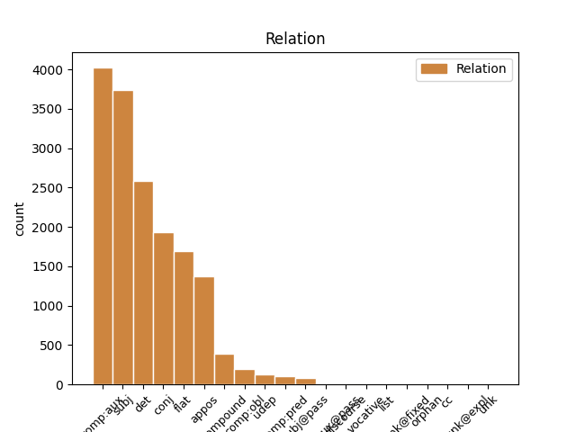
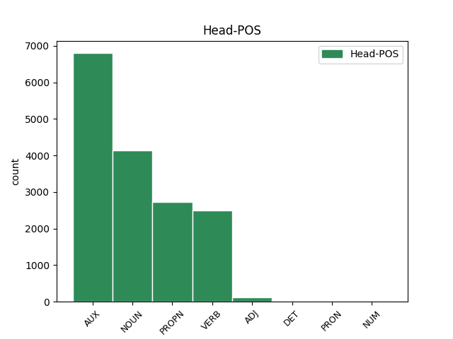
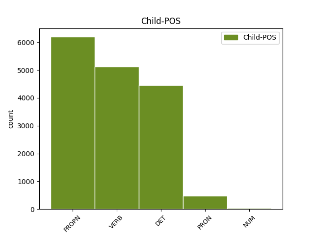

Distribution of features within this leaf



Agreement Rules sorted by frequency.
- When the dependent token is the complement for auxiliary(comp:aux) of the head token, and the dependent token is VERB.
1 Ovaj _ _ _ _ 0 _ _ _
2 energetski _ _ _ _ 0 _ _ _
3 kontinuum _ _ _ _ 0 _ _ _
4 , _ _ _ _ 0 _ _ _
5 zbog _ _ _ _ 0 _ _ _
6 svog _ _ _ _ 0 _ _ _
7 strogog _ _ _ _ 0 _ _ _
8 kartezijanizma _ _ _ _ 0 _ _ _
9 , _ _ _ _ 0 _ _ _
10 Newton _ _ _ _ 0 _ _ _
11 ne _ _ _ _ 0 _ _ _
12 bi _ _ _ _ 0 _ _ _
13 priznao _ _ _ _ 0 _ _ _
14 , _ _ _ _ 0 _ _ _
15 jer _ _ _ _ 0 _ _ _
16 je biti AUX Var3s Mood=Ind|Number=Sing|Person=3|Tense=Pres|VerbForm=Fin 0 _ _ _
17 toplinu _ _ _ _ 0 _ _ _
18 , _ _ _ _ 0 _ _ _
19 kao _ _ _ _ 0 _ _ _
20 sekundarno _ _ _ _ 0 _ _ _
21 svojstvo _ _ _ _ 0 _ _ _
22 , _ _ _ _ 0 _ _ _
23 smatrao smatrati VERB Vmp-sm Gender=Masc|Number=Sing|Tense=Past|VerbForm=Part|Voice=Act 16 comp:aux _ _
24 nestvarnom _ _ _ _ 0 _ _ _
25 , _ _ _ _ 0 _ _ _
26 odnosno _ _ _ _ 0 _ _ _
27 prividom _ _ _ _ 0 _ _ _
28 svodivim _ _ _ _ 0 _ _ _
29 na _ _ _ _ 0 _ _ _
30 mehanička _ _ _ _ 0 _ _ _
31 svojstva _ _ _ _ 0 _ _ _
32 . _ _ _ _ 0 _ _ _
1 ( _ _ _ _ 0 _ _ _
2 3 _ _ _ _ 0 _ _ _
3 ) _ _ _ _ 0 _ _ _
4 Za _ _ _ _ 0 _ _ _
5 dio _ _ _ _ 0 _ _ _
6 građevinskog _ _ _ _ 0 _ _ _
7 područja _ _ _ _ 0 _ _ _
8 naselja _ _ _ _ 0 _ _ _
9 Novi _ _ _ _ 0 _ _ _
10 Vinodolski _ _ _ _ 0 _ _ _
11 NA1 _ _ _ _ 0 _ _ _
12 1 _ _ _ _ 0 _ _ _
13 - _ _ _ _ 0 _ _ _
14 registriranu _ _ _ _ 0 _ _ _
15 povijesnu _ _ _ _ 0 _ _ _
16 graditeljsku _ _ _ _ 0 _ _ _
17 cjelinu _ _ _ _ 0 _ _ _
18 , _ _ _ _ 0 _ _ _
19 moguća _ _ _ _ 0 _ _ _
20 su _ _ _ _ 0 _ _ _
21 odstupanja _ _ _ _ 0 _ _ _
22 od _ _ _ _ 0 _ _ _
23 zadanih _ _ _ _ 0 _ _ _
24 graničnih _ _ _ _ 0 _ _ _
25 vrijednosti _ _ _ _ 0 _ _ _
26 navedenih _ _ _ _ 0 _ _ _
27 u _ _ _ _ 0 _ _ _
28 člancima _ _ _ _ 0 _ _ _
29 27. _ _ _ _ 0 _ _ _
30 i _ _ _ _ 0 _ _ _
31 28. _ _ _ _ 0 _ _ _
32 Ovih ovaj DET Pd-fpg Case=Gen|Gender=Fem|Number=Plur|PronType=Dem 33 det _ _
33 Odredbi odredba NOUN Ncfpg Case=Gen|Gender=Fem|Number=Plur 0 _ _ _
34 ali _ _ _ _ 0 _ _ _
35 samo _ _ _ _ 0 _ _ _
36 u _ _ _ _ 0 _ _ _
37 smislu _ _ _ _ 0 _ _ _
38 uvjeta _ _ _ _ 0 _ _ _
39 određenih _ _ _ _ 0 _ _ _
40 od _ _ _ _ 0 _ _ _
41 nadležnog _ _ _ _ 0 _ _ _
42 Konzervatorskog _ _ _ _ 0 _ _ _
43 odjela _ _ _ _ 0 _ _ _
44 ( _ _ _ _ 0 _ _ _
45 označeno _ _ _ _ 0 _ _ _
46 kao _ _ _ _ 0 _ _ _
47 gradsko _ _ _ _ 0 _ _ _
48 naselje _ _ _ _ 0 _ _ _
49 - _ _ _ _ 0 _ _ _
50 zone _ _ _ _ 0 _ _ _
51 14 _ _ _ _ 0 _ _ _
52 A _ _ _ _ 0 _ _ _
53 i _ _ _ _ 0 _ _ _
54 14 _ _ _ _ 0 _ _ _
55 B _ _ _ _ 0 _ _ _
56 na _ _ _ _ 0 _ _ _
57 kartografskom _ _ _ _ 0 _ _ _
58 prikazu _ _ _ _ 0 _ _ _
59 br. _ _ _ _ 0 _ _ _
60 4.1. _ _ _ _ 0 _ _ _
61 » _ _ _ _ 0 _ _ _
62 Građevinska _ _ _ _ 0 _ _ _
63 područja _ _ _ _ 0 _ _ _
64 « _ _ _ _ 0 _ _ _
65 u _ _ _ _ 0 _ _ _
66 mjerilu _ _ _ _ 0 _ _ _
67 1:5000 _ _ _ _ 0 _ _ _
68 ) _ _ _ _ 0 _ _ _
69 . _ _ _ _ 0 _ _ _
1 Kako _ _ _ _ 0 _ _ _
2 je _ _ _ _ 0 _ _ _
3 kazao _ _ _ _ 0 _ _ _
4 riječki _ _ _ _ 0 _ _ _
5 gradonačelnik _ _ _ _ 0 _ _ _
6 Vojko Vojko PROPN Npmsn Case=Nom|Gender=Masc|Number=Sing 0 _ _ _
7 Obersnel Obersnel PROPN Npmsn Case=Nom|Gender=Masc|Number=Sing 6 flat _ SpaceAfter=No
8 , _ _ _ _ 0 _ _ _
9 pokretanjem _ _ _ _ 0 _ _ _
10 studija _ _ _ _ 0 _ _ _
11 i _ _ _ _ 0 _ _ _
12 programa _ _ _ _ 0 _ _ _
13 cjeloživotnog _ _ _ _ 0 _ _ _
14 učenja _ _ _ _ 0 _ _ _
15 u _ _ _ _ 0 _ _ _
16 Rijeci _ _ _ _ 0 _ _ _
17 će _ _ _ _ 0 _ _ _
18 biti _ _ _ _ 0 _ _ _
19 zaokruženo _ _ _ _ 0 _ _ _
20 učenje _ _ _ _ 0 _ _ _
21 talijanskog _ _ _ _ 0 _ _ _
22 jezika _ _ _ _ 0 _ _ _
23 , _ _ _ _ 0 _ _ _
24 koje _ _ _ _ 0 _ _ _
25 sada _ _ _ _ 0 _ _ _
26 postoji _ _ _ _ 0 _ _ _
27 u _ _ _ _ 0 _ _ _
28 jaslicama _ _ _ _ 0 _ _ _
29 , _ _ _ _ 0 _ _ _
30 vrtićima _ _ _ _ 0 _ _ _
31 te _ _ _ _ 0 _ _ _
32 osnovnim _ _ _ _ 0 _ _ _
33 i _ _ _ _ 0 _ _ _
34 srednjim _ _ _ _ 0 _ _ _
35 školama _ _ _ _ 0 _ _ _
36 . _ _ _ _ 0 _ _ _
1 Ovaj _ _ _ _ 0 _ _ _
2 energetski _ _ _ _ 0 _ _ _
3 kontinuum _ _ _ _ 0 _ _ _
4 , _ _ _ _ 0 _ _ _
5 zbog _ _ _ _ 0 _ _ _
6 svog _ _ _ _ 0 _ _ _
7 strogog _ _ _ _ 0 _ _ _
8 kartezijanizma _ _ _ _ 0 _ _ _
9 , _ _ _ _ 0 _ _ _
10 Newton Newton PROPN Npmsn Case=Nom|Gender=Masc|Number=Sing 12 subj _ _
11 ne _ _ _ _ 0 _ _ _
12 bi biti AUX Vaa3s Mood=Cnd|Number=Sing|Person=3|Tense=Past|VerbForm=Fin 0 _ _ _
13 priznao _ _ _ _ 0 _ _ _
14 , _ _ _ _ 0 _ _ _
15 jer _ _ _ _ 0 _ _ _
16 je _ _ _ _ 0 _ _ _
17 toplinu _ _ _ _ 0 _ _ _
18 , _ _ _ _ 0 _ _ _
19 kao _ _ _ _ 0 _ _ _
20 sekundarno _ _ _ _ 0 _ _ _
21 svojstvo _ _ _ _ 0 _ _ _
22 , _ _ _ _ 0 _ _ _
23 smatrao _ _ _ _ 0 _ _ _
24 nestvarnom _ _ _ _ 0 _ _ _
25 , _ _ _ _ 0 _ _ _
26 odnosno _ _ _ _ 0 _ _ _
27 prividom _ _ _ _ 0 _ _ _
28 svodivim _ _ _ _ 0 _ _ _
29 na _ _ _ _ 0 _ _ _
30 mehanička _ _ _ _ 0 _ _ _
31 svojstva _ _ _ _ 0 _ _ _
32 . _ _ _ _ 0 _ _ _
1 Kako _ _ _ _ 0 _ _ _
2 u _ _ _ _ 0 _ _ _
3 svom _ _ _ _ 0 _ _ _
4 priopćenju _ _ _ _ 0 _ _ _
5 napominju _ _ _ _ 0 _ _ _
6 iz _ _ _ _ 0 _ _ _
7 Spona _ _ _ _ 0 _ _ _
8 komunikacija _ _ _ _ 0 _ _ _
9 , _ _ _ _ 0 _ _ _
10 u _ _ _ _ 0 _ _ _
11 tekstu _ _ _ _ 0 _ _ _
12 se _ _ _ _ 0 _ _ _
13 navodi _ _ _ _ 0 _ _ _
14 da _ _ _ _ 0 _ _ _
15 su _ _ _ _ 0 _ _ _
16 Irska _ _ _ _ 0 _ _ _
17 i _ _ _ _ 0 _ _ _
18 Poljska _ _ _ _ 0 _ _ _
19 jedne _ _ _ _ 0 _ _ _
20 od _ _ _ _ 0 _ _ _
21 rijetkih _ _ _ _ 0 _ _ _
22 zemalja _ _ _ _ 0 _ _ _
23 u _ _ _ _ 0 _ _ _
24 kojima _ _ _ _ 0 _ _ _
25 je _ _ _ _ 0 _ _ _
26 ova _ _ _ _ 0 _ _ _
27 pilula _ _ _ _ 0 _ _ _
28 posve _ _ _ _ 0 _ _ _
29 zabranjena _ _ _ _ 0 _ _ _
30 , _ _ _ _ 0 _ _ _
31 što _ _ _ _ 0 _ _ _
32 je _ _ _ _ 0 _ _ _
33 netočno _ _ _ _ 0 _ _ _
34 , _ _ _ _ 0 _ _ _
35 jer _ _ _ _ 0 _ _ _
36 je _ _ _ _ 0 _ _ _
37 pilula _ _ _ _ 0 _ _ _
38 indicirana _ _ _ _ 0 _ _ _
39 na _ _ _ _ 0 _ _ _
40 hitnu _ _ _ _ 0 _ _ _
41 kontracepciju _ _ _ _ 0 _ _ _
42 , _ _ _ _ 0 _ _ _
43 koja _ _ _ _ 0 _ _ _
44 sadrži _ _ _ _ 0 _ _ _
45 levonorgestrel _ _ _ _ 0 _ _ _
46 , _ _ _ _ 0 _ _ _
47 dostupna _ _ _ _ 0 _ _ _
48 u _ _ _ _ 0 _ _ _
49 obje _ _ _ _ 0 _ _ _
50 države _ _ _ _ 0 _ _ _
51 , _ _ _ _ 0 _ _ _
52 gdje _ _ _ _ 0 _ _ _
53 se _ _ _ _ 0 _ _ _
54 prodaje _ _ _ _ 0 _ _ _
55 u _ _ _ _ 0 _ _ _
56 ljekarnama _ _ _ _ 0 _ _ _
57 na _ _ _ _ 0 _ _ _
58 liječnički _ _ _ _ 0 _ _ _
59 recept _ _ _ _ 0 _ _ _
60 , _ _ _ _ 0 _ _ _
61 kao _ _ _ _ 0 _ _ _
62 što _ _ _ _ 0 _ _ _
63 je biti AUX Var3s Mood=Ind|Number=Sing|Person=3|Tense=Pres|VerbForm=Fin 0 _ _ _
64 to taj DET Pd-nsn Case=Nom|Gender=Neut|Number=Sing|PronType=Dem 63 subj _ _
65 od _ _ _ _ 0 _ _ _
66 danas _ _ _ _ 0 _ _ _
67 moguće _ _ _ _ 0 _ _ _
68 i _ _ _ _ 0 _ _ _
69 u _ _ _ _ 0 _ _ _
70 Hrvatskoj _ _ _ _ 0 _ _ _
71 . _ _ _ _ 0 _ _ _
1 ( _ _ _ _ 0 _ _ _
2 3 _ _ _ _ 0 _ _ _
3 ) _ _ _ _ 0 _ _ _
4 Za _ _ _ _ 0 _ _ _
5 dio dio NOUN Ncmsan Animacy=Inan|Case=Acc|Gender=Masc|Number=Sing 0 _ _ _
6 građevinskog _ _ _ _ 0 _ _ _
7 područja _ _ _ _ 0 _ _ _
8 naselja _ _ _ _ 0 _ _ _
9 Novi _ _ _ _ 0 _ _ _
10 Vinodolski _ _ _ _ 0 _ _ _
11 NA1 Na1 PROPN Npmsn Case=Nom|Gender=Masc|Number=Sing 5 appos _ _
12 1 _ _ _ _ 0 _ _ _
13 - _ _ _ _ 0 _ _ _
14 registriranu _ _ _ _ 0 _ _ _
15 povijesnu _ _ _ _ 0 _ _ _
16 graditeljsku _ _ _ _ 0 _ _ _
17 cjelinu _ _ _ _ 0 _ _ _
18 , _ _ _ _ 0 _ _ _
19 moguća _ _ _ _ 0 _ _ _
20 su _ _ _ _ 0 _ _ _
21 odstupanja _ _ _ _ 0 _ _ _
22 od _ _ _ _ 0 _ _ _
23 zadanih _ _ _ _ 0 _ _ _
24 graničnih _ _ _ _ 0 _ _ _
25 vrijednosti _ _ _ _ 0 _ _ _
26 navedenih _ _ _ _ 0 _ _ _
27 u _ _ _ _ 0 _ _ _
28 člancima _ _ _ _ 0 _ _ _
29 27. _ _ _ _ 0 _ _ _
30 i _ _ _ _ 0 _ _ _
31 28. _ _ _ _ 0 _ _ _
32 Ovih _ _ _ _ 0 _ _ _
33 Odredbi _ _ _ _ 0 _ _ _
34 ali _ _ _ _ 0 _ _ _
35 samo _ _ _ _ 0 _ _ _
36 u _ _ _ _ 0 _ _ _
37 smislu _ _ _ _ 0 _ _ _
38 uvjeta _ _ _ _ 0 _ _ _
39 određenih _ _ _ _ 0 _ _ _
40 od _ _ _ _ 0 _ _ _
41 nadležnog _ _ _ _ 0 _ _ _
42 Konzervatorskog _ _ _ _ 0 _ _ _
43 odjela _ _ _ _ 0 _ _ _
44 ( _ _ _ _ 0 _ _ _
45 označeno _ _ _ _ 0 _ _ _
46 kao _ _ _ _ 0 _ _ _
47 gradsko _ _ _ _ 0 _ _ _
48 naselje _ _ _ _ 0 _ _ _
49 - _ _ _ _ 0 _ _ _
50 zone _ _ _ _ 0 _ _ _
51 14 _ _ _ _ 0 _ _ _
52 A _ _ _ _ 0 _ _ _
53 i _ _ _ _ 0 _ _ _
54 14 _ _ _ _ 0 _ _ _
55 B _ _ _ _ 0 _ _ _
56 na _ _ _ _ 0 _ _ _
57 kartografskom _ _ _ _ 0 _ _ _
58 prikazu _ _ _ _ 0 _ _ _
59 br. _ _ _ _ 0 _ _ _
60 4.1. _ _ _ _ 0 _ _ _
61 » _ _ _ _ 0 _ _ _
62 Građevinska _ _ _ _ 0 _ _ _
63 područja _ _ _ _ 0 _ _ _
64 « _ _ _ _ 0 _ _ _
65 u _ _ _ _ 0 _ _ _
66 mjerilu _ _ _ _ 0 _ _ _
67 1:5000 _ _ _ _ 0 _ _ _
68 ) _ _ _ _ 0 _ _ _
69 . _ _ _ _ 0 _ _ _
1 Inače _ _ _ _ 0 _ _ _
2 , _ _ _ _ 0 _ _ _
3 od _ _ _ _ 0 _ _ _
4 početka _ _ _ _ 0 _ _ _
5 re-emitiranja _ _ _ _ 0 _ _ _
6 serije _ _ _ _ 0 _ _ _
7 2002. _ _ _ _ 0 _ _ _
8 Top _ _ _ _ 0 _ _ _
9 Gear _ _ _ _ 0 _ _ _
10 je biti AUX Var3s Mood=Ind|Number=Sing|Person=3|Tense=Pres|VerbForm=Fin 0 _ _ _
11 imao _ _ _ _ 0 _ _ _
12 18 _ _ _ _ 0 _ _ _
13 sezona _ _ _ _ 0 _ _ _
14 i _ _ _ _ 0 _ _ _
15 147 _ _ _ _ 0 _ _ _
16 epizoda _ _ _ _ 0 _ _ _
17 , _ _ _ _ 0 _ _ _
18 a _ _ _ _ 0 _ _ _
19 njihova _ _ _ _ 0 _ _ _
20 Facebook _ _ _ _ 0 _ _ _
21 stranica _ _ _ _ 0 _ _ _
22 trenutno _ _ _ _ 0 _ _ _
23 ima imati VERB Vmr3s Mood=Ind|Number=Sing|Person=3|Tense=Pres|VerbForm=Fin 10 conj _ _
24 12,1 _ _ _ _ 0 _ _ _
25 milijun _ _ _ _ 0 _ _ _
26 likeova _ _ _ _ 0 _ _ _
27 . _ _ _ _ 0 _ _ _
1 Kako _ _ _ _ 0 _ _ _
2 u _ _ _ _ 0 _ _ _
3 svom _ _ _ _ 0 _ _ _
4 priopćenju _ _ _ _ 0 _ _ _
5 napominju _ _ _ _ 0 _ _ _
6 iz _ _ _ _ 0 _ _ _
7 Spona _ _ _ _ 0 _ _ _
8 komunikacija _ _ _ _ 0 _ _ _
9 , _ _ _ _ 0 _ _ _
10 u _ _ _ _ 0 _ _ _
11 tekstu _ _ _ _ 0 _ _ _
12 se _ _ _ _ 0 _ _ _
13 navodi _ _ _ _ 0 _ _ _
14 da _ _ _ _ 0 _ _ _
15 su _ _ _ _ 0 _ _ _
16 Irska Irska PROPN Npfsn Case=Nom|Gender=Fem|Number=Sing 0 _ _ _
17 i _ _ _ _ 0 _ _ _
18 Poljska Poljska PROPN Npfsn Case=Nom|Gender=Fem|Number=Sing 16 conj _ _
19 jedne _ _ _ _ 0 _ _ _
20 od _ _ _ _ 0 _ _ _
21 rijetkih _ _ _ _ 0 _ _ _
22 zemalja _ _ _ _ 0 _ _ _
23 u _ _ _ _ 0 _ _ _
24 kojima _ _ _ _ 0 _ _ _
25 je _ _ _ _ 0 _ _ _
26 ova _ _ _ _ 0 _ _ _
27 pilula _ _ _ _ 0 _ _ _
28 posve _ _ _ _ 0 _ _ _
29 zabranjena _ _ _ _ 0 _ _ _
30 , _ _ _ _ 0 _ _ _
31 što _ _ _ _ 0 _ _ _
32 je _ _ _ _ 0 _ _ _
33 netočno _ _ _ _ 0 _ _ _
34 , _ _ _ _ 0 _ _ _
35 jer _ _ _ _ 0 _ _ _
36 je _ _ _ _ 0 _ _ _
37 pilula _ _ _ _ 0 _ _ _
38 indicirana _ _ _ _ 0 _ _ _
39 na _ _ _ _ 0 _ _ _
40 hitnu _ _ _ _ 0 _ _ _
41 kontracepciju _ _ _ _ 0 _ _ _
42 , _ _ _ _ 0 _ _ _
43 koja _ _ _ _ 0 _ _ _
44 sadrži _ _ _ _ 0 _ _ _
45 levonorgestrel _ _ _ _ 0 _ _ _
46 , _ _ _ _ 0 _ _ _
47 dostupna _ _ _ _ 0 _ _ _
48 u _ _ _ _ 0 _ _ _
49 obje _ _ _ _ 0 _ _ _
50 države _ _ _ _ 0 _ _ _
51 , _ _ _ _ 0 _ _ _
52 gdje _ _ _ _ 0 _ _ _
53 se _ _ _ _ 0 _ _ _
54 prodaje _ _ _ _ 0 _ _ _
55 u _ _ _ _ 0 _ _ _
56 ljekarnama _ _ _ _ 0 _ _ _
57 na _ _ _ _ 0 _ _ _
58 liječnički _ _ _ _ 0 _ _ _
59 recept _ _ _ _ 0 _ _ _
60 , _ _ _ _ 0 _ _ _
61 kao _ _ _ _ 0 _ _ _
62 što _ _ _ _ 0 _ _ _
63 je _ _ _ _ 0 _ _ _
64 to _ _ _ _ 0 _ _ _
65 od _ _ _ _ 0 _ _ _
66 danas _ _ _ _ 0 _ _ _
67 moguće _ _ _ _ 0 _ _ _
68 i _ _ _ _ 0 _ _ _
69 u _ _ _ _ 0 _ _ _
70 Hrvatskoj _ _ _ _ 0 _ _ _
71 . _ _ _ _ 0 _ _ _
1 Osigurajte _ _ _ _ 0 _ _ _
2 na _ _ _ _ 0 _ _ _
3 vrijeme _ _ _ _ 0 _ _ _
4 svoje _ _ _ _ 0 _ _ _
5 mjesto _ _ _ _ 0 _ _ _
6 putem _ _ _ _ 0 _ _ _
7 weba _ _ _ _ 0 _ _ _
8 Green Green PROPN Npmsn Case=Nom|Gender=Masc|Number=Sing 0 _ _ _
9 Gold _ _ _ _ 0 _ _ _
10 Cluba Club PROPN Npmsg Case=Gen|Gender=Masc|Number=Sing 8 compound _ SpaceAfter=No
11 . _ _ _ _ 0 _ _ _
1 No _ _ _ _ 0 _ _ _
2 , _ _ _ _ 0 _ _ _
3 obzirom _ _ _ _ 0 _ _ _
4 da _ _ _ _ 0 _ _ _
5 je biti AUX Var3s Mood=Ind|Number=Sing|Person=3|Tense=Pres|VerbForm=Fin 0 _ _ _
6 ona on PRON Pp3fsn Case=Nom|Gender=Fem|Number=Sing|Person=3|PronType=Prs 5 subj _ _
7 već _ _ _ _ 0 _ _ _
8 na _ _ _ _ 0 _ _ _
9 funkciji _ _ _ _ 0 _ _ _
10 predsjednice _ _ _ _ 0 _ _ _
11 GO-a _ _ _ _ 0 _ _ _
12 , _ _ _ _ 0 _ _ _
13 za _ _ _ _ 0 _ _ _
14 kandidaturu _ _ _ _ 0 _ _ _
15 za _ _ _ _ 0 _ _ _
16 mjesto _ _ _ _ 0 _ _ _
17 županijske _ _ _ _ 0 _ _ _
18 čelnice _ _ _ _ 0 _ _ _
19 morat _ _ _ _ 0 _ _ _
20 će _ _ _ _ 0 _ _ _
21 podnijeti _ _ _ _ 0 _ _ _
22 ostavku _ _ _ _ 0 _ _ _
23 , _ _ _ _ 0 _ _ _
24 pa _ _ _ _ 0 _ _ _
25 će _ _ _ _ 0 _ _ _
26 stoga _ _ _ _ 0 _ _ _
27 zadarski _ _ _ _ 0 _ _ _
28 HNS _ _ _ _ 0 _ _ _
29 morati _ _ _ _ 0 _ _ _
30 izabrati _ _ _ _ 0 _ _ _
31 i _ _ _ _ 0 _ _ _
32 novog _ _ _ _ 0 _ _ _
33 čelnika _ _ _ _ 0 _ _ _
34 Gradske _ _ _ _ 0 _ _ _
35 organizacije _ _ _ _ 0 _ _ _
36 . _ _ _ _ 0 _ _ _
1 Prije _ _ _ _ 0 _ _ _
2 nekoliko _ _ _ _ 0 _ _ _
3 dana _ _ _ _ 0 _ _ _
4 također _ _ _ _ 0 _ _ _
5 je _ _ _ _ 0 _ _ _
6 liječnici _ _ _ _ 0 _ _ _
7 koja _ _ _ _ 0 _ _ _
8 pomaže _ _ _ _ 0 _ _ _
9 unesrećenima _ _ _ _ 0 _ _ _
10 rekao _ _ _ _ 0 _ _ _
11 kako _ _ _ _ 0 _ _ _
12 bi _ _ _ _ 0 _ _ _
13 on _ _ _ _ 0 _ _ _
14 volio _ _ _ _ 0 _ _ _
15 ' _ _ _ _ 0 _ _ _
16 da _ _ _ _ 0 _ _ _
17 mu on PRON Pp3msd Case=Dat|Gender=Masc|Number=Sing|Person=3|PronType=Prs 18 comp:obl _ _
18 daje davati VERB Vmr3s Mood=Ind|Number=Sing|Person=3|Tense=Pres|VerbForm=Fin 0 _ _ _
19 usta _ _ _ _ 0 _ _ _
20 na _ _ _ _ 0 _ _ _
21 usta _ _ _ _ 0 _ _ _
22 ' _ _ _ _ 0 _ _ _
23 , _ _ _ _ 0 _ _ _
24 te _ _ _ _ 0 _ _ _
25 je _ _ _ _ 0 _ _ _
26 poručio _ _ _ _ 0 _ _ _
27 ljudima _ _ _ _ 0 _ _ _
28 koji _ _ _ _ 0 _ _ _
29 su _ _ _ _ 0 _ _ _
30 ostali _ _ _ _ 0 _ _ _
31 bez _ _ _ _ 0 _ _ _
32 domova _ _ _ _ 0 _ _ _
33 ' _ _ _ _ 0 _ _ _
34 neka _ _ _ _ 0 _ _ _
35 to _ _ _ _ 0 _ _ _
36 shvate _ _ _ _ 0 _ _ _
37 kao _ _ _ _ 0 _ _ _
38 kampiranje _ _ _ _ 0 _ _ _
39 ' _ _ _ _ 0 _ _ _
40 . _ _ _ _ 0 _ _ _
1 Sve _ _ _ _ 0 _ _ _
2 to _ _ _ _ 0 _ _ _
3 neminovno _ _ _ _ 0 _ _ _
4 rezultira _ _ _ _ 0 _ _ _
5 smanjenjem _ _ _ _ 0 _ _ _
6 i _ _ _ _ 0 _ _ _
7 ugrožavanjem _ _ _ _ 0 _ _ _
8 prirodnih _ _ _ _ 0 _ _ _
9 staništa _ _ _ _ 0 _ _ _
10 kojima koji DET Pi-npi Case=Ins|Gender=Neut|Number=Plur|PronType=Int,Rel 11 udep _ _
11 prolaze prolaziti VERB Vmr3p Mood=Ind|Number=Plur|Person=3|Tense=Pres|VerbForm=Fin 0 _ _ _
12 životinje _ _ _ _ 0 _ _ _
13 , _ _ _ _ 0 _ _ _
14 a _ _ _ _ 0 _ _ _
15 naravno _ _ _ _ 0 _ _ _
16 i _ _ _ _ 0 _ _ _
17 brojnim _ _ _ _ 0 _ _ _
18 životinjskim _ _ _ _ 0 _ _ _
19 vrstama _ _ _ _ 0 _ _ _
20 , _ _ _ _ 0 _ _ _
21 pa _ _ _ _ 0 _ _ _
22 tako _ _ _ _ 0 _ _ _
23 i _ _ _ _ 0 _ _ _
24 divljači _ _ _ _ 0 _ _ _
25 i _ _ _ _ 0 _ _ _
26 zvijeri _ _ _ _ 0 _ _ _
27 . _ _ _ _ 0 _ _ _
1 BEOGRAD _ _ _ _ 0 _ _ _
2 " _ _ _ _ 0 _ _ _
3 Zoran Zoran PROPN Npmsn Case=Nom|Gender=Masc|Number=Sing 5 subj@pass _ _
4 Đinđić _ _ _ _ 0 _ _ _
5 je biti AUX Var3s Mood=Ind|Number=Sing|Person=3|Tense=Pres|VerbForm=Fin 0 _ _ _
6 ubijen _ _ _ _ 0 _ _ _
7 zato _ _ _ _ 0 _ _ _
8 što _ _ _ _ 0 _ _ _
9 je _ _ _ _ 0 _ _ _
10 svojom _ _ _ _ 0 _ _ _
11 politikom _ _ _ _ 0 _ _ _
12 udario _ _ _ _ 0 _ _ _
13 na _ _ _ _ 0 _ _ _
14 dvije _ _ _ _ 0 _ _ _
15 ključne _ _ _ _ 0 _ _ _
16 stvari _ _ _ _ 0 _ _ _
17 : _ _ _ _ 0 _ _ _
18 organizirani _ _ _ _ 0 _ _ _
19 kriminal _ _ _ _ 0 _ _ _
20 i _ _ _ _ 0 _ _ _
21 ratne _ _ _ _ 0 _ _ _
22 zločince _ _ _ _ 0 _ _ _
23 . _ _ _ _ 0 _ _ _
1 I _ _ _ _ 0 _ _ _
2 što _ _ _ _ 0 _ _ _
3 je _ _ _ _ 0 _ _ _
4 to _ _ _ _ 0 _ _ _
5 što _ _ _ _ 0 _ _ _
6 je _ _ _ _ 0 _ _ _
7 stišano _ _ _ _ 0 _ _ _
8 , _ _ _ _ 0 _ _ _
9 odnosno _ _ _ _ 0 _ _ _
10 , _ _ _ _ 0 _ _ _
11 što _ _ _ _ 0 _ _ _
12 je biti AUX Var3s Mood=Ind|Number=Sing|Person=3|Tense=Pres|VerbForm=Fin 0 _ _ _
13 to taj DET Pd-nsn Case=Nom|Gender=Neut|Number=Sing|PronType=Dem 12 comp:pred _ _
14 australsko _ _ _ _ 0 _ _ _
15 u _ _ _ _ 0 _ _ _
16 australskim _ _ _ _ 0 _ _ _
17 filmovima _ _ _ _ 0 _ _ _
18 , _ _ _ _ 0 _ _ _
19 pitamo _ _ _ _ 0 _ _ _
20 se _ _ _ _ 0 _ _ _
21 u _ _ _ _ 0 _ _ _
22 vremenu _ _ _ _ 0 _ _ _
23 u _ _ _ _ 0 _ _ _
24 kojemu _ _ _ _ 0 _ _ _
25 mnogi _ _ _ _ 0 _ _ _
26 žele _ _ _ _ 0 _ _ _
27 da _ _ _ _ 0 _ _ _
28 svi _ _ _ _ 0 _ _ _
29 filmovi _ _ _ _ 0 _ _ _
30 budu _ _ _ _ 0 _ _ _
31 nalik _ _ _ _ 0 _ _ _
32 američkima _ _ _ _ 0 _ _ _
33 . _ _ _ _ 0 _ _ _
1 S _ _ _ _ 0 _ _ _
2 druge _ _ _ _ 0 _ _ _
3 strane _ _ _ _ 0 _ _ _
4 on _ _ _ _ 0 _ _ _
5 je biti AUX Var3s Mood=Ind|Number=Sing|Person=3|Tense=Pres|VerbForm=Fin 0 _ _ _
6 Poljak Poljak PROPN Npmsn Case=Nom|Gender=Masc|Number=Sing 5 comp:pred _ SpaceAfter=No
7 , _ _ _ _ 0 _ _ _
8 sklon _ _ _ _ 0 _ _ _
9 tradicionalizmu _ _ _ _ 0 _ _ _
10 što _ _ _ _ 0 _ _ _
11 vidimo _ _ _ _ 0 _ _ _
12 po _ _ _ _ 0 _ _ _
13 tome _ _ _ _ 0 _ _ _
14 da _ _ _ _ 0 _ _ _
15 nije _ _ _ _ 0 _ _ _
16 sklon _ _ _ _ 0 _ _ _
17 neka _ _ _ _ 0 _ _ _
18 pitanja _ _ _ _ 0 _ _ _
19 unutar _ _ _ _ 0 _ _ _
20 Crkve _ _ _ _ 0 _ _ _
21 staviti _ _ _ _ 0 _ _ _
22 na _ _ _ _ 0 _ _ _
23 dnevni _ _ _ _ 0 _ _ _
24 red _ _ _ _ 0 _ _ _
25 . _ _ _ _ 0 _ _ _
1 Odstupanje _ _ _ _ 0 _ _ _
2 od _ _ _ _ 0 _ _ _
3 gradiva _ _ _ _ 0 _ _ _
4 ispitnog _ _ _ _ 0 _ _ _
5 kataloga katalog NOUN Ncmsg Case=Gen|Gender=Masc|Number=Sing 0 _ _ _
6 i _ _ _ _ 0 _ _ _
7 onoga onaj DET Pd-msg Case=Gen|Gender=Masc|Number=Sing|PronType=Dem 5 conj _ _
8 koje _ _ _ _ 0 _ _ _
9 uopće _ _ _ _ 0 _ _ _
10 u _ _ _ _ 0 _ _ _
11 njemu _ _ _ _ 0 _ _ _
12 nije _ _ _ _ 0 _ _ _
13 navedeno _ _ _ _ 0 _ _ _
14 , _ _ _ _ 0 _ _ _
15 smatra _ _ _ _ 0 _ _ _
16 se _ _ _ _ 0 _ _ _
17 prekršajnim _ _ _ _ 0 _ _ _
18 i _ _ _ _ 0 _ _ _
19 kaznenim _ _ _ _ 0 _ _ _
20 djelom _ _ _ _ 0 _ _ _
21 . _ _ _ _ 0 _ _ _
1 Moje _ _ _ _ 0 _ _ _
2 je _ _ _ _ 0 _ _ _
3 mišljenje _ _ _ _ 0 _ _ _
4 da _ _ _ _ 0 _ _ _
5 je _ _ _ _ 0 _ _ _
6 u _ _ _ _ 0 _ _ _
7 današnje _ _ _ _ 0 _ _ _
8 vrijeme _ _ _ _ 0 _ _ _
9 govora _ _ _ _ 0 _ _ _
10 o _ _ _ _ 0 _ _ _
11 komunikaciji _ _ _ _ 0 _ _ _
12 , _ _ _ _ 0 _ _ _
13 u _ _ _ _ 0 _ _ _
14 kojoj _ _ _ _ 0 _ _ _
15 jedni jedan NUM Mlcmpn Case=Nom|Gender=Masc|Number=Plur|NumType=Card 17 subj _ _
16 druge _ _ _ _ 0 _ _ _
17 učimo učiti VERB Vmr1p Mood=Ind|Number=Plur|Person=1|Tense=Pres|VerbForm=Fin 0 _ _ _
18 , _ _ _ _ 0 _ _ _
19 a _ _ _ _ 0 _ _ _
20 u _ _ _ _ 0 _ _ _
21 različitim _ _ _ _ 0 _ _ _
22 grupama _ _ _ _ 0 _ _ _
23 potpore _ _ _ _ 0 _ _ _
24 i _ _ _ _ 0 _ _ _
25 ohrabrujemo _ _ _ _ 0 _ _ _
26 kako _ _ _ _ 0 _ _ _
27 govoriti _ _ _ _ 0 _ _ _
28 o _ _ _ _ 0 _ _ _
29 vlastitim _ _ _ _ 0 _ _ _
30 osjećajima _ _ _ _ 0 _ _ _
31 i _ _ _ _ 0 _ _ _
32 « _ _ _ _ 0 _ _ _
33 stanjima _ _ _ _ 0 _ _ _
34 svijesti _ _ _ _ 0 _ _ _
35 » _ _ _ _ 0 _ _ _
36 , _ _ _ _ 0 _ _ _
37 poziv _ _ _ _ 0 _ _ _
38 na _ _ _ _ 0 _ _ _
39 kontemplaciju _ _ _ _ 0 _ _ _
40 veoma _ _ _ _ 0 _ _ _
41 aktualan _ _ _ _ 0 _ _ _
42 . _ _ _ _ 0 _ _ _
1 Anđeo _ _ _ _ 0 _ _ _
2 Mariji Marija PROPN Npfsd Case=Dat|Gender=Fem|Number=Sing 3 comp:obl _ _
3 naviješta naviještati VERB Vmr3s Mood=Ind|Number=Sing|Person=3|Tense=Pres|VerbForm=Fin 0 _ _ _
4 Isusa _ _ _ _ 0 _ _ _
5 kao _ _ _ _ 0 _ _ _
6 onoga _ _ _ _ 0 _ _ _
7 koji _ _ _ _ 0 _ _ _
8 će _ _ _ _ 0 _ _ _
9 biti _ _ _ _ 0 _ _ _
10 ispunjen _ _ _ _ 0 _ _ _
11 Duhom _ _ _ _ 0 _ _ _
12 Svetim _ _ _ _ 0 _ _ _
13 već _ _ _ _ 0 _ _ _
14 od _ _ _ _ 0 _ _ _
15 majčine _ _ _ _ 0 _ _ _
16 utrobe _ _ _ _ 0 _ _ _
17 . _ _ _ _ 0 _ _ _
1 To taj DET Pd-nsn Case=Nom|Gender=Neut|Number=Sing|PronType=Dem 3 subj@pass _ _
2 se _ _ _ _ 0 _ _ _
3 postiže postizati VERB Vmr3s Mood=Ind|Number=Sing|Person=3|Tense=Pres|VerbForm=Fin 0 _ _ _
4 suradnjom _ _ _ _ 0 _ _ _
5 naše _ _ _ _ 0 _ _ _
6 slobode _ _ _ _ 0 _ _ _
7 s _ _ _ _ 0 _ _ _
8 Božjom _ _ _ _ 0 _ _ _
9 milošću _ _ _ _ 0 _ _ _
10 i _ _ _ _ 0 _ _ _
11 ljubavlju _ _ _ _ 0 _ _ _
12 , _ _ _ _ 0 _ _ _
13 s _ _ _ _ 0 _ _ _
14 Božjom _ _ _ _ 0 _ _ _
15 ponudom _ _ _ _ 0 _ _ _
16 . _ _ _ _ 0 _ _ _
1 Netko _ _ _ _ 0 _ _ _
2 će _ _ _ _ 0 _ _ _
3 od _ _ _ _ 0 _ _ _
4 vas _ _ _ _ 0 _ _ _
5 sigurno _ _ _ _ 0 _ _ _
6 reći _ _ _ _ 0 _ _ _
7 ; _ _ _ _ 0 _ _ _
8 ne _ _ _ _ 0 _ _ _
9 bih biti AUX Vaa1s Mood=Cnd|Number=Sing|Person=1|Tense=Past|VerbForm=Fin 0 _ _ _
10 mu _ _ _ _ 0 _ _ _
11 ja _ _ _ _ 0 _ _ _
12 kupio kupiti VERB Vmp-sm Gender=Masc|Number=Sing|Tense=Past|VerbForm=Part|Voice=Act 9 comp:aux@pass _ _
13 šljive _ _ _ _ 0 _ _ _
14 za _ _ _ _ 0 _ _ _
15 jedan _ _ _ _ 0 _ _ _
16 sladoled _ _ _ _ 0 _ _ _
17 . _ _ _ _ 0 _ _ _
1 Hoće htjeti VERB Vmr3s Mood=Ind|Number=Sing|Person=3|Tense=Pres|VerbForm=Fin 0 _ _ _
2 li _ _ _ _ 0 _ _ _
3 Maxovu _ _ _ _ 0 _ _ _
4 poljuljanu _ _ _ _ 0 _ _ _
5 karijeru _ _ _ _ 0 _ _ _
6 izvući izvući VERB Vmr3s Mood=Ind|Number=Sing|Person=3|Tense=Pres|VerbForm=Fin 1 comp:pred _ _
7 činjenica _ _ _ _ 0 _ _ _
8 da _ _ _ _ 0 _ _ _
9 se _ _ _ _ 0 _ _ _
10 Max _ _ _ _ 0 _ _ _
11 vratio _ _ _ _ 0 _ _ _
12 kući _ _ _ _ 0 _ _ _
13 i _ _ _ _ 0 _ _ _
14 hoćemo _ _ _ _ 0 _ _ _
15 li _ _ _ _ 0 _ _ _
16 vidjeti _ _ _ _ 0 _ _ _
17 izvanrednu _ _ _ _ 0 _ _ _
18 sezonu _ _ _ _ 0 _ _ _
19 u _ _ _ _ 0 _ _ _
20 Superbikeu _ _ _ _ 0 _ _ _
21 , _ _ _ _ 0 _ _ _
22 moramo _ _ _ _ 0 _ _ _
23 se _ _ _ _ 0 _ _ _
24 uvjeriti _ _ _ _ 0 _ _ _
25 sami _ _ _ _ 0 _ _ _
26 . _ _ _ _ 0 _ _ _
1 Naime _ _ _ _ 0 _ _ _
2 , _ _ _ _ 0 _ _ _
3 prošle _ _ _ _ 0 _ _ _
4 godine _ _ _ _ 0 _ _ _
5 su _ _ _ _ 0 _ _ _
6 prvi _ _ _ _ 0 _ _ _
7 put _ _ _ _ 0 _ _ _
8 uveli _ _ _ _ 0 _ _ _
9 tu _ _ _ _ 0 _ _ _
10 tehniku _ _ _ _ 0 _ _ _
11 , _ _ _ _ 0 _ _ _
12 koja _ _ _ _ 0 _ _ _
13 je biti AUX Var3s Mood=Ind|Number=Sing|Person=3|Tense=Pres|VerbForm=Fin 0 _ _ _
14 zadnji _ _ _ _ 0 _ _ _
15 put _ _ _ _ 0 _ _ _
16 viđena _ _ _ _ 0 _ _ _
17 davne _ _ _ _ 0 _ _ _
18 2001. _ _ _ _ 0 _ _ _
19 u _ _ _ _ 0 _ _ _
20 Minardiju Minardi PROPN Npmsl Case=Loc|Gender=Masc|Number=Sing 13 udep _ SpaceAfter=No
21 , _ _ _ _ 0 _ _ _
22 upravo _ _ _ _ 0 _ _ _
23 u _ _ _ _ 0 _ _ _
24 vrijeme _ _ _ _ 0 _ _ _
25 dok _ _ _ _ 0 _ _ _
26 je _ _ _ _ 0 _ _ _
27 Alonso _ _ _ _ 0 _ _ _
28 vozio _ _ _ _ 0 _ _ _
29 za _ _ _ _ 0 _ _ _
30 dotičnu _ _ _ _ 0 _ _ _
31 momčad _ _ _ _ 0 _ _ _
32 . _ _ _ _ 0 _ _ _
1 Ako _ _ _ _ 0 _ _ _
2 vam _ _ _ _ 0 _ _ _
3 još _ _ _ _ 0 _ _ _
4 nije biti AUX Var3s Mood=Ind|Number=Sing|Person=3|Polarity=Neg|Tense=Pres|VerbForm=Fin 0 _ _ _
5 jasno _ _ _ _ 0 _ _ _
6 o _ _ _ _ 0 _ _ _
7 kakvoj _ _ _ _ 0 _ _ _
8 se _ _ _ _ 0 _ _ _
9 sceni _ _ _ _ 0 _ _ _
10 ovdje _ _ _ _ 0 _ _ _
11 radi raditi VERB Vmr3s Mood=Ind|Number=Sing|Person=3|Tense=Pres|VerbForm=Fin 4 subj _ SpaceAfter=No
12 , _ _ _ _ 0 _ _ _
13 zamislite _ _ _ _ 0 _ _ _
14 muškarca _ _ _ _ 0 _ _ _
15 i _ _ _ _ 0 _ _ _
16 ženu _ _ _ _ 0 _ _ _
17 koji _ _ _ _ 0 _ _ _
18 u _ _ _ _ 0 _ _ _
19 naletu _ _ _ _ 0 _ _ _
20 strasti _ _ _ _ 0 _ _ _
21 jedan _ _ _ _ 0 _ _ _
22 drugoga _ _ _ _ 0 _ _ _
23 nabijaju _ _ _ _ 0 _ _ _
24 na _ _ _ _ 0 _ _ _
25 zid _ _ _ _ 0 _ _ _
26 . _ _ _ _ 0 _ _ _
1 I _ _ _ _ 0 _ _ _
2 tu _ _ _ _ 0 _ _ _
3 su _ _ _ _ 0 _ _ _
4 već _ _ _ _ 0 _ _ _
5 vidljivi _ _ _ _ 0 _ _ _
6 rezultati rezultat NOUN Ncmpn Case=Nom|Gender=Masc|Number=Plur 0 _ _ _
7 : _ _ _ _ 0 _ _ _
8 postupci _ _ _ _ 0 _ _ _
9 se _ _ _ _ 0 _ _ _
10 rješavaju rješavati VERB Vmr3p Mood=Ind|Number=Plur|Person=3|Tense=Pres|VerbForm=Fin 6 appos _ _
11 brže _ _ _ _ 0 _ _ _
12 , _ _ _ _ 0 _ _ _
13 a _ _ _ _ 0 _ _ _
14 u _ _ _ _ 0 _ _ _
15 2009. _ _ _ _ 0 _ _ _
16 godini _ _ _ _ 0 _ _ _
17 broj _ _ _ _ 0 _ _ _
18 predmeta _ _ _ _ 0 _ _ _
19 starijih _ _ _ _ 0 _ _ _
20 od _ _ _ _ 0 _ _ _
21 3 _ _ _ _ 0 _ _ _
22 godine _ _ _ _ 0 _ _ _
23 smanjen _ _ _ _ 0 _ _ _
24 je _ _ _ _ 0 _ _ _
25 za _ _ _ _ 0 _ _ _
26 dodatnih _ _ _ _ 0 _ _ _
27 7 _ _ _ _ 0 _ _ _
28 % _ _ _ _ 0 _ _ _
29 . _ _ _ _ 0 _ _ _
1 Dakar _ _ _ _ 0 _ _ _
2 reli _ _ _ _ 0 _ _ _
3 je biti AUX Var3s Mood=Ind|Number=Sing|Person=3|Tense=Pres|VerbForm=Fin 0 _ _ _
4 jedna jedan NUM Mlcfsn Case=Nom|Gender=Fem|Number=Sing|NumType=Card 3 comp:pred _ _
5 od _ _ _ _ 0 _ _ _
6 najzahtjevnijih _ _ _ _ 0 _ _ _
7 utrka _ _ _ _ 0 _ _ _
8 na _ _ _ _ 0 _ _ _
9 svijetu _ _ _ _ 0 _ _ _
10 . _ _ _ _ 0 _ _ _
1 Ako _ _ _ _ 0 _ _ _
2 itko _ _ _ _ 0 _ _ _
3 , _ _ _ _ 0 _ _ _
4 to taj DET Pd-nsn Case=Nom|Gender=Neut|Number=Sing|PronType=Dem 5 discourse _ _
5 on on PRON Pp3msn Case=Nom|Gender=Masc|Number=Sing|Person=3|PronType=Prs 0 _ _ _
6 bijaše _ _ _ _ 0 _ _ _
7 kriv _ _ _ _ 0 _ _ _
8 - _ _ _ _ 0 _ _ _
9 što _ _ _ _ 0 _ _ _
10 je _ _ _ _ 0 _ _ _
11 živ _ _ _ _ 0 _ _ _
12 . _ _ _ _ 0 _ _ _
1 Studentima _ _ _ _ 0 _ _ _
2 će _ _ _ _ 0 _ _ _
3 biti _ _ _ _ 0 _ _ _
4 omogućen _ _ _ _ 0 _ _ _
5 download _ _ _ _ 0 _ _ _
6 skripta _ _ _ _ 0 _ _ _
7 i _ _ _ _ 0 _ _ _
8 udžbenika _ _ _ _ 0 _ _ _
9 ( _ _ _ _ 0 _ _ _
10 oni oni PRON Pp3mpn Case=Nom|Gender=Masc|Number=Plur|Person=3|PronType=Prs 13 subj@pass _ _
11 sasvim _ _ _ _ 0 _ _ _
12 sigurno _ _ _ _ 0 _ _ _
13 nisu biti AUX Var3p Mood=Ind|Number=Plur|Person=3|Polarity=Neg|Tense=Pres|VerbForm=Fin 0 _ _ _
14 terorizirani _ _ _ _ 0 _ _ _
15 sa _ _ _ _ 0 _ _ _
16 LMS-om _ _ _ _ 0 _ _ _
17 ) _ _ _ _ 0 _ _ _
18 , _ _ _ _ 0 _ _ _
19 a _ _ _ _ 0 _ _ _
20 iPad _ _ _ _ 0 _ _ _
21 će _ _ _ _ 0 _ _ _
22 moći _ _ _ _ 0 _ _ _
23 koristiti _ _ _ _ 0 _ _ _
24 i _ _ _ _ 0 _ _ _
25 za _ _ _ _ 0 _ _ _
26 razmjenu _ _ _ _ 0 _ _ _
27 datoteka _ _ _ _ 0 _ _ _
28 te _ _ _ _ 0 _ _ _
29 za _ _ _ _ 0 _ _ _
30 održavanje _ _ _ _ 0 _ _ _
31 bilježaka _ _ _ _ 0 _ _ _
32 . _ _ _ _ 0 _ _ _
1 Ipak _ _ _ _ 0 _ _ _
2 , _ _ _ _ 0 _ _ _
3 najbolje _ _ _ _ 0 _ _ _
4 obrazovanje _ _ _ _ 0 _ _ _
5 je biti AUX Var3s Mood=Ind|Number=Sing|Person=3|Tense=Pres|VerbForm=Fin 0 _ _ _
6 ono on PRON Pp3nsn Case=Nom|Gender=Neut|Number=Sing|Person=3|PronType=Prs 5 comp:pred _ _
7 koje _ _ _ _ 0 _ _ _
8 donosi _ _ _ _ 0 _ _ _
9 osobni _ _ _ _ 0 _ _ _
10 kontakt _ _ _ _ 0 _ _ _
11 i _ _ _ _ 0 _ _ _
12 interakcija _ _ _ _ 0 _ _ _
13 , _ _ _ _ 0 _ _ _
14 do _ _ _ _ 0 _ _ _
15 koje _ _ _ _ 0 _ _ _
16 dolazi _ _ _ _ 0 _ _ _
17 u _ _ _ _ 0 _ _ _
18 okruženju _ _ _ _ 0 _ _ _
19 učionice _ _ _ _ 0 _ _ _
20 ili _ _ _ _ 0 _ _ _
21 treninga _ _ _ _ 0 _ _ _
22 na _ _ _ _ 0 _ _ _
23 radnom _ _ _ _ 0 _ _ _
24 mjestu _ _ _ _ 0 _ _ _
25 . _ _ _ _ 0 _ _ _
1 Dakle _ _ _ _ 0 _ _ _
2 , _ _ _ _ 0 _ _ _
3 slično _ _ _ _ 0 _ _ _
4 kao _ _ _ _ 0 _ _ _
5 u _ _ _ _ 0 _ _ _
6 Amsterdamu _ _ _ _ 0 _ _ _
7 , _ _ _ _ 0 _ _ _
8 kada _ _ _ _ 0 _ _ _
9 su _ _ _ _ 0 _ _ _
10 Mandžukić _ _ _ _ 0 _ _ _
11 i _ _ _ _ 0 _ _ _
12 Tadić _ _ _ _ 0 _ _ _
13 , _ _ _ _ 0 _ _ _
14 poslije _ _ _ _ 0 _ _ _
15 i _ _ _ _ 0 _ _ _
16 Mikić _ _ _ _ 0 _ _ _
17 pritiskali _ _ _ _ 0 _ _ _
18 i _ _ _ _ 0 _ _ _
19 izbezumili _ _ _ _ 0 _ _ _
20 Stama _ _ _ _ 0 _ _ _
21 i _ _ _ _ 0 _ _ _
22 Van _ _ _ _ 0 _ _ _
23 der der PROPN Npmsay Animacy=Anim|Case=Acc|Gender=Masc|Number=Sing 24 det _ _
24 Wiela Wiel PROPN Npmsay Animacy=Anim|Case=Acc|Gender=Masc|Number=Sing 0 _ _ _
25 . _ _ _ _ 0 _ _ _
1 Tondin Tondin PROPN Npmsn Case=Nom|Gender=Masc|Number=Sing 6 vocative _ SpaceAfter=No
2 , _ _ _ _ 0 _ _ _
3 zašto _ _ _ _ 0 _ _ _
4 to _ _ _ _ 0 _ _ _
5 stalno _ _ _ _ 0 _ _ _
6 pitaš pitati VERB Vmr2s Mood=Ind|Number=Sing|Person=2|Tense=Pres|VerbForm=Fin 0 _ _ _
7 ? _ _ _ _ 0 _ _ _
1 Recimo _ _ _ _ 0 _ _ _
2 jedan jedan NUM Mlcmsn Case=Nom|Gender=Masc|Number=Sing|NumType=Card 5 subj@pass _ _
3 od _ _ _ _ 0 _ _ _
4 bisera _ _ _ _ 0 _ _ _
5 je biti AUX Var3s Mood=Ind|Number=Sing|Person=3|Tense=Pres|VerbForm=Fin 0 _ _ _
6 bio _ _ _ _ 0 _ _ _
7 izrečen _ _ _ _ 0 _ _ _
8 od _ _ _ _ 0 _ _ _
9 carice _ _ _ _ 0 _ _ _
10 Jace _ _ _ _ 0 _ _ _
11 Vlaisavljević _ _ _ _ 0 _ _ _
12 kako _ _ _ _ 0 _ _ _
13 ćemo _ _ _ _ 0 _ _ _
14 mi _ _ _ _ 0 _ _ _
15 branitelji _ _ _ _ 0 _ _ _
16 živjeti _ _ _ _ 0 _ _ _
17 relaksirano _ _ _ _ 0 _ _ _
18 . _ _ _ _ 0 _ _ _
1 Doslovno _ _ _ _ 0 _ _ _
2 se _ _ _ _ 0 _ _ _
3 prije _ _ _ _ 0 _ _ _
4 utakmice _ _ _ _ 0 _ _ _
5 svinje _ _ _ _ 0 _ _ _
6 tjeralo _ _ _ _ 0 _ _ _
7 s _ _ _ _ 0 _ _ _
8 terena _ _ _ _ 0 _ _ _
9 , _ _ _ _ 0 _ _ _
10 igrači _ _ _ _ 0 _ _ _
11 psuju _ _ _ _ 0 _ _ _
12 majku _ _ _ _ 0 _ _ _
13 sucu _ _ _ _ 0 _ _ _
14 , _ _ _ _ 0 _ _ _
15 treneru _ _ _ _ 0 _ _ _
16 i _ _ _ _ 0 _ _ _
17 jedni jedan NUM Mlcmpn Case=Nom|Gender=Masc|Number=Plur|NumType=Card 18 compound _ _
18 drugima drugi ADJ Mlompd Case=Dat|Degree=Pos|Gender=Masc|Number=Plur 0 _ _ _
19 . _ _ _ _ 0 _ _ _
1 Zaista _ _ _ _ 0 _ _ _
2 ugodno _ _ _ _ 0 _ _ _
3 iskustvo _ _ _ _ 0 _ _ _
4 , _ _ _ _ 0 _ _ _
5 svima _ _ _ _ 0 _ _ _
6 bih biti AUX Vaa1s Mood=Cnd|Number=Sing|Person=1|Tense=Past|VerbForm=Fin 0 _ _ _
7 to taj DET Pd-nsa Case=Acc|Gender=Neut|Number=Sing|PronType=Dem 6 comp:aux _ _
8 preporučio _ _ _ _ 0 _ _ _
9 . _ _ _ _ 0 _ _ _
1 Zato _ _ _ _ 0 _ _ _
2 što _ _ _ _ 0 _ _ _
3 je _ _ _ _ 0 _ _ _
4 on _ _ _ _ 0 _ _ _
5 jedina _ _ _ _ 0 _ _ _
6 nedjeljiva _ _ _ _ 0 _ _ _
7 ljubav _ _ _ _ 0 _ _ _
8 s _ _ _ _ 0 _ _ _
9 pravom _ _ _ _ 0 _ _ _
10 kažemo _ _ _ _ 0 _ _ _
11 da _ _ _ _ 0 _ _ _
12 je _ _ _ _ 0 _ _ _
13 Bog _ _ _ _ 0 _ _ _
14 ljubav _ _ _ _ 0 _ _ _
15 , _ _ _ _ 0 _ _ _
16 a _ _ _ _ 0 _ _ _
17 ljubav _ _ _ _ 0 _ _ _
18 nije biti AUX Var3s Mood=Ind|Number=Sing|Person=3|Polarity=Neg|Tense=Pres|VerbForm=Fin 0 _ _ _
19 Bog Bog PROPN Npmsn Case=Nom|Gender=Masc|Number=Sing 18 comp:aux _ SpaceAfter=No
20 . _ _ _ _ 0 _ _ _
1 Lošije _ _ _ _ 0 _ _ _
2 od _ _ _ _ 0 _ _ _
3 Kaptola _ _ _ _ 0 _ _ _
4 u _ _ _ _ 0 _ _ _
5 raspodjeli _ _ _ _ 0 _ _ _
6 proračunskog _ _ _ _ 0 _ _ _
7 novca _ _ _ _ 0 _ _ _
8 2008. _ _ _ _ 0 _ _ _
9 godine _ _ _ _ 0 _ _ _
10 prošli _ _ _ _ 0 _ _ _
11 su _ _ _ _ 0 _ _ _
12 , _ _ _ _ 0 _ _ _
13 primjerice _ _ _ _ 0 _ _ _
14 , _ _ _ _ 0 _ _ _
15 i _ _ _ _ 0 _ _ _
16 Vlada _ _ _ _ 0 _ _ _
17 koja _ _ _ _ 0 _ _ _
18 je _ _ _ _ 0 _ _ _
19 na _ _ _ _ 0 _ _ _
20 raspolaganju _ _ _ _ 0 _ _ _
21 imala _ _ _ _ 0 _ _ _
22 289 _ _ _ _ 0 _ _ _
23 milijuna _ _ _ _ 0 _ _ _
24 kuna _ _ _ _ 0 _ _ _
25 , _ _ _ _ 0 _ _ _
26 Sabor Sabor PROPN Npmsn Case=Nom|Gender=Masc|Number=Sing 30 orphan _ orig_deprel=nsubj
27 177 _ _ _ _ 0 _ _ _
28 , _ _ _ _ 0 _ _ _
29 a _ _ _ _ 0 _ _ _
30 Ured ured NOUN Ncmsn Case=Nom|Gender=Masc|Number=Sing 0 _ _ _
31 predsjednika _ _ _ _ 0 _ _ _
32 55 _ _ _ _ 0 _ _ _
33 milijuna _ _ _ _ 0 _ _ _
34 kuna _ _ _ _ 0 _ _ _
35 . _ _ _ _ 0 _ _ _
1 A _ _ _ _ 0 _ _ _
2 onaj onaj DET Pd-msn Case=Nom|Gender=Masc|Number=Sing|PronType=Dem 0 _ _ _
3 koji _ _ _ _ 0 _ _ _
4 ne _ _ _ _ 0 _ _ _
5 vjeruje _ _ _ _ 0 _ _ _
6 Boga _ _ _ _ 0 _ _ _
7 , _ _ _ _ 0 _ _ _
8 Njegove _ _ _ _ 0 _ _ _
9 meleke _ _ _ _ 0 _ _ _
10 , _ _ _ _ 0 _ _ _
11 Njegove _ _ _ _ 0 _ _ _
12 Knjige _ _ _ _ 0 _ _ _
13 , _ _ _ _ 0 _ _ _
14 Njegove _ _ _ _ 0 _ _ _
15 poslanike _ _ _ _ 0 _ _ _
16 i _ _ _ _ 0 _ _ _
17 Sudnji _ _ _ _ 0 _ _ _
18 dan _ _ _ _ 0 _ _ _
19 , _ _ _ _ 0 _ _ _
20 taj taj DET Pd-msn Case=Nom|Gender=Masc|Number=Sing|PronType=Dem 2 appos _ _
21 je _ _ _ _ 0 _ _ _
22 daleko _ _ _ _ 0 _ _ _
23 zalutao _ _ _ _ 0 _ _ _
24 . _ _ _ _ 0 _ _ _
25 ( _ _ _ _ 0 _ _ _
26 Kur'an _ _ _ _ 0 _ _ _
27 IV. _ _ _ _ 0 _ _ _
28 136 _ _ _ _ 0 _ _ _
29 ) _ _ _ _ 0 _ _ _
1 Konkretna _ _ _ _ 0 _ _ _
2 preraspodjela _ _ _ _ 0 _ _ _
3 sredstava _ _ _ _ 0 _ _ _
4 , _ _ _ _ 0 _ _ _
5 tvrde _ _ _ _ 0 _ _ _
6 naši _ _ _ _ 0 _ _ _
7 izvori _ _ _ _ 0 _ _ _
8 , _ _ _ _ 0 _ _ _
9 bit _ _ _ _ 0 _ _ _
10 će _ _ _ _ 0 _ _ _
11 vidljivija _ _ _ _ 0 _ _ _
12 kada _ _ _ _ 0 _ _ _
13 se _ _ _ _ 0 _ _ _
14 bude _ _ _ _ 0 _ _ _
15 početkom _ _ _ _ 0 _ _ _
16 godine _ _ _ _ 0 _ _ _
17 donosio _ _ _ _ 0 _ _ _
18 Operativni _ _ _ _ 0 _ _ _
19 plan _ _ _ _ 0 _ _ _
20 za _ _ _ _ 0 _ _ _
21 malo _ _ _ _ 0 _ _ _
22 i _ _ _ _ 0 _ _ _
23 srednje _ _ _ _ 0 _ _ _
24 poduzetništvo _ _ _ _ 0 _ _ _
25 , _ _ _ _ 0 _ _ _
26 na _ _ _ _ 0 _ _ _
27 temelju temelj NOUN Ncmsl Case=Loc|Gender=Masc|Number=Sing 0 _ _ _
28 kojega koji DET Pi-msg Case=Gen|Gender=Masc|Number=Sing|PronType=Int,Rel 27 unk@fixed _ _
29 će _ _ _ _ 0 _ _ _
30 se _ _ _ _ 0 _ _ _
31 i _ _ _ _ 0 _ _ _
32 raspisivati _ _ _ _ 0 _ _ _
33 natječaji _ _ _ _ 0 _ _ _
34 . _ _ _ _ 0 _ _ _
1 Kao _ _ _ _ 0 _ _ _
2 režiser _ _ _ _ 0 _ _ _
3 ove _ _ _ _ 0 _ _ _
4 fešte _ _ _ _ 0 _ _ _
5 , _ _ _ _ 0 _ _ _
6 zapanjio _ _ _ _ 0 _ _ _
7 sam _ _ _ _ 0 _ _ _
8 se _ _ _ _ 0 _ _ _
9 koliko _ _ _ _ 0 _ _ _
10 se _ _ _ _ 0 _ _ _
11 toga _ _ _ _ 0 _ _ _
12 što _ _ _ _ 0 _ _ _
13 smo _ _ _ _ 0 _ _ _
14 napisali _ _ _ _ 0 _ _ _
15 Ana Ana PROPN Npfsn Case=Nom|Gender=Fem|Number=Sing 0 _ _ _
16 Prolić _ _ _ _ 0 _ _ _
17 Kragić _ _ _ _ 0 _ _ _
18 i _ _ _ _ 0 _ _ _
19 ja ja PRON Pp1-sn Case=Nom|Number=Sing|Person=1|PronType=Prs 15 conj _ SpaceAfter=No
20 , _ _ _ _ 0 _ _ _
21 posložilo _ _ _ _ 0 _ _ _
22 s _ _ _ _ 0 _ _ _
23 događajima _ _ _ _ 0 _ _ _
24 nakon _ _ _ _ 0 _ _ _
25 jučerašnje _ _ _ _ 0 _ _ _
26 konferencije _ _ _ _ 0 _ _ _
27 za _ _ _ _ 0 _ _ _
28 novinare _ _ _ _ 0 _ _ _
29 . _ _ _ _ 0 _ _ _
1 Neki _ _ _ _ 0 _ _ _
2 od _ _ _ _ 0 _ _ _
3 nas _ _ _ _ 0 _ _ _
4 im _ _ _ _ 0 _ _ _
5 se _ _ _ _ 0 _ _ _
6 dive _ _ _ _ 0 _ _ _
7 , _ _ _ _ 0 _ _ _
8 neki _ _ _ _ 0 _ _ _
9 ih _ _ _ _ 0 _ _ _
10 ni _ _ _ _ 0 _ _ _
11 ne _ _ _ _ 0 _ _ _
12 primjećuju _ _ _ _ 0 _ _ _
13 , _ _ _ _ 0 _ _ _
14 a _ _ _ _ 0 _ _ _
15 nekima neki DET Pi-npd Case=Dat|Gender=Neut|Number=Plur|PronType=Ind 17 comp:obl _ _
16 se _ _ _ _ 0 _ _ _
17 pojavljuju pojavljivati VERB Vmr3p Mood=Ind|Number=Plur|Person=3|Tense=Pres|VerbForm=Fin 0 _ _ _
18 u _ _ _ _ 0 _ _ _
19 najgorim _ _ _ _ 0 _ _ _
20 noćnim _ _ _ _ 0 _ _ _
21 morama _ _ _ _ 0 _ _ _
22 . _ _ _ _ 0 _ _ _
1 Jer _ _ _ _ 0 _ _ _
2 je _ _ _ _ 0 _ _ _
3 mnoštvo _ _ _ _ 0 _ _ _
4 ljudskih _ _ _ _ 0 _ _ _
5 stvari _ _ _ _ 0 _ _ _
6 dobro _ _ _ _ 0 _ _ _
7 upravljano _ _ _ _ 0 _ _ _
8 kad _ _ _ _ 0 _ _ _
9 njime on PRON Pp3nsi Case=Ins|Gender=Neut|Number=Sing|Person=3|PronType=Prs 10 udep _ _
10 upravlja upravljati VERB Vmr3s Mood=Ind|Number=Sing|Person=3|Tense=Pres|VerbForm=Fin 0 _ _ _
11 samo _ _ _ _ 0 _ _ _
12 jedan _ _ _ _ 0 _ _ _
13 . _ _ _ _ 0 _ _ _
1 Pa _ _ _ _ 0 _ _ _
2 sam _ _ _ _ 0 _ _ _
3 ga _ _ _ _ 0 _ _ _
4 pozvala _ _ _ _ 0 _ _ _
5 na _ _ _ _ 0 _ _ _
6 našu _ _ _ _ 0 _ _ _
7 Konferenciju _ _ _ _ 0 _ _ _
8 i _ _ _ _ 0 _ _ _
9 on on PRON Pp3msn Case=Nom|Gender=Masc|Number=Sing|Person=3|PronType=Prs 10 comp:aux _ _
10 je biti AUX Var3s Mood=Ind|Number=Sing|Person=3|Tense=Pres|VerbForm=Fin 0 _ _ _
11 poziv _ _ _ _ 0 _ _ _
12 prihvatio _ _ _ _ 0 _ _ _
13 . _ _ _ _ 0 _ _ _
1 Dok _ _ _ _ 0 _ _ _
2 su _ _ _ _ 0 _ _ _
3 ideje _ _ _ _ 0 _ _ _
4 o _ _ _ _ 0 _ _ _
5 legalnom _ _ _ _ 0 _ _ _
6 radu _ _ _ _ 0 _ _ _
7 alternativaca _ _ _ _ 0 _ _ _
8 u _ _ _ _ 0 _ _ _
9 Hrvatskoj _ _ _ _ 0 _ _ _
10 još _ _ _ _ 0 _ _ _
11 u _ _ _ _ 0 _ _ _
12 povojima _ _ _ _ 0 _ _ _
13 , _ _ _ _ 0 _ _ _
14 u _ _ _ _ 0 _ _ _
15 razvijenim _ _ _ _ 0 _ _ _
16 europskim _ _ _ _ 0 _ _ _
17 zemljama _ _ _ _ 0 _ _ _
18 država _ _ _ _ 0 _ _ _
19 je _ _ _ _ 0 _ _ _
20 propisala _ _ _ _ 0 _ _ _
21 pravila _ _ _ _ 0 _ _ _
22 igre _ _ _ _ 0 _ _ _
23 : _ _ _ _ 0 _ _ _
24 određeni _ _ _ _ 0 _ _ _
25 su _ _ _ _ 0 _ _ _
26 načini _ _ _ _ 0 _ _ _
27 financiranja _ _ _ _ 0 _ _ _
28 i _ _ _ _ 0 _ _ _
29 propisano _ _ _ _ 0 _ _ _
30 je biti AUX Var3s Mood=Ind|Number=Sing|Person=3|Tense=Pres|VerbForm=Fin 0 _ _ _
31 tko _ _ _ _ 0 _ _ _
32 može moći VERB Vmr3s Mood=Ind|Number=Sing|Person=3|Tense=Pres|VerbForm=Fin 30 subj@pass _ _
33 primjenjivati _ _ _ _ 0 _ _ _
34 alternativne _ _ _ _ 0 _ _ _
35 metode _ _ _ _ 0 _ _ _
36 liječenja _ _ _ _ 0 _ _ _
37 . _ _ _ _ 0 _ _ _
1 Nagrade _ _ _ _ 0 _ _ _
2 se _ _ _ _ 0 _ _ _
3 podižu _ _ _ _ 0 _ _ _
4 u _ _ _ _ 0 _ _ _
5 Hoću htjeti VERB Vmr1s Mood=Ind|Number=Sing|Person=1|Tense=Pres|VerbForm=Fin 0 _ _ _
6 to taj DET Pd-nsa Case=Acc|Gender=Neut|Number=Sing|PronType=Dem 5 compound _ _
7 dućanu _ _ _ _ 0 _ _ _
8 u _ _ _ _ 0 _ _ _
9 Zagrebu _ _ _ _ 0 _ _ _
10 , _ _ _ _ 0 _ _ _
11 City _ _ _ _ 0 _ _ _
12 Centar _ _ _ _ 0 _ _ _
13 One _ _ _ _ 0 _ _ _
14 ( _ _ _ _ 0 _ _ _
15 tko _ _ _ _ 0 _ _ _
16 nije _ _ _ _ 0 _ _ _
17 iz _ _ _ _ 0 _ _ _
18 Zagreba _ _ _ _ 0 _ _ _
19 , _ _ _ _ 0 _ _ _
20 dogovorit _ _ _ _ 0 _ _ _
21 ćemo _ _ _ _ 0 _ _ _
22 slanje _ _ _ _ 0 _ _ _
23 poštom _ _ _ _ 0 _ _ _
24 ) _ _ _ _ 0 _ _ _
25 . _ _ _ _ 0 _ _ _
1 Dosad _ _ _ _ 0 _ _ _
2 je _ _ _ _ 0 _ _ _
3 objavio _ _ _ _ 0 _ _ _
4 tri _ _ _ _ 0 _ _ _
5 romana _ _ _ _ 0 _ _ _
6 : _ _ _ _ 0 _ _ _
7 Želiš _ _ _ _ 0 _ _ _
8 li _ _ _ _ 0 _ _ _
9 pogledati _ _ _ _ 0 _ _ _
10 sunce _ _ _ _ 0 _ _ _
11 u _ _ _ _ 0 _ _ _
12 ponoć _ _ _ _ 0 _ _ _
13 ? _ _ _ _ 0 _ _ _
14 , _ _ _ _ 0 _ _ _
15 Jeste _ _ _ _ 0 _ _ _
16 li _ _ _ _ 0 _ _ _
17 kupili _ _ _ _ 0 _ _ _
18 direktoru _ _ _ _ 0 _ _ _
19 parkerice _ _ _ _ 0 _ _ _
20 ? _ _ _ _ 0 _ _ _
21 , _ _ _ _ 0 _ _ _
22 Spojene _ _ _ _ 0 _ _ _
23 vožnje _ _ _ _ 0 _ _ _
24 zatim _ _ _ _ 0 _ _ _
25 antologiju _ _ _ _ 0 _ _ _
26 Rivalove _ _ _ _ 0 _ _ _
27 generacije _ _ _ _ 0 _ _ _
28 Dan _ _ _ _ 0 _ _ _
29 velikih _ _ _ _ 0 _ _ _
30 valova _ _ _ _ 0 _ _ _
31 u _ _ _ _ 0 _ _ _
32 koautorstvu _ _ _ _ 0 _ _ _
33 s _ _ _ _ 0 _ _ _
34 Mladenom _ _ _ _ 0 _ _ _
35 Uremom _ _ _ _ 0 _ _ _
36 i _ _ _ _ 0 _ _ _
37 Goranom _ _ _ _ 0 _ _ _
38 Ušljebrkom _ _ _ _ 0 _ _ _
39 te _ _ _ _ 0 _ _ _
40 publicističku _ _ _ _ 0 _ _ _
41 knjigu _ _ _ _ 0 _ _ _
42 Janko _ _ _ _ 0 _ _ _
43 Polić _ _ _ _ 0 _ _ _
44 Kamov _ _ _ _ 0 _ _ _
45 , _ _ _ _ 0 _ _ _
46 njegovo njegov DET Ps3nsa Case=Acc|Gender=Neut|Gender[psor]=Masc,Neut|Number=Sing|Number[psor]=Sing|Person=3|Poss=Yes|PronType=Prs 0 _ _ _
47 i _ _ _ _ 0 _ _ _
48 naše naš DET Ps1nsn Case=Nom|Gender=Neut|Number=Sing|Number[psor]=Plur|Person=1|Poss=Yes|PronType=Prs 46 flat _ _
49 doba _ _ _ _ 0 _ _ _
50 u _ _ _ _ 0 _ _ _
51 koautorstvu _ _ _ _ 0 _ _ _
52 s _ _ _ _ 0 _ _ _
53 Mladenom _ _ _ _ 0 _ _ _
54 Uremom _ _ _ _ 0 _ _ _
55 . _ _ _ _ 0 _ _ _
1 Treći _ _ _ _ 0 _ _ _
2 glazbeno-scenski _ _ _ _ 0 _ _ _
3 recital _ _ _ _ 0 _ _ _
4 pod _ _ _ _ 0 _ _ _
5 nazivom _ _ _ _ 0 _ _ _
6 Cijela _ _ _ _ 0 _ _ _
7 zemlja _ _ _ _ 0 _ _ _
8 slavu _ _ _ _ 0 _ _ _
9 ti ti PRON Pp2-sd Case=Dat|Number=Sing|Person=2|PronType=Prs 10 compound _ _
10 pjeva pjevati VERB Vmr3s Mood=Ind|Number=Sing|Person=3|Tense=Pres|VerbForm=Fin 0 _ _ _
11 " _ _ _ _ 0 _ _ _
12 održat _ _ _ _ 0 _ _ _
13 će _ _ _ _ 0 _ _ _
14 se _ _ _ _ 0 _ _ _
15 u _ _ _ _ 0 _ _ _
16 subotu _ _ _ _ 0 _ _ _
17 25.10.2008 _ _ _ _ 0 _ _ _
18 u _ _ _ _ 0 _ _ _
19 19:30 _ _ _ _ 0 _ _ _
20 u _ _ _ _ 0 _ _ _
21 Srednjoj _ _ _ _ 0 _ _ _
22 školi _ _ _ _ 0 _ _ _
23 Dugo _ _ _ _ 0 _ _ _
24 Selo _ _ _ _ 0 _ _ _
25 . _ _ _ _ 0 _ _ _
1 Jedanaest _ _ _ _ 0 _ _ _
2 mjeseci _ _ _ _ 0 _ _ _
3 nakon _ _ _ _ 0 _ _ _
4 što _ _ _ _ 0 _ _ _
5 je _ _ _ _ 0 _ _ _
6 hrvatska _ _ _ _ 0 _ _ _
7 zrakoplovna _ _ _ _ 0 _ _ _
8 kompanija _ _ _ _ 0 _ _ _
9 Croatia _ _ _ _ 0 _ _ _
10 Airlines _ _ _ _ 0 _ _ _
11 , _ _ _ _ 0 _ _ _
12 zbog _ _ _ _ 0 _ _ _
13 racionalizacije _ _ _ _ 0 _ _ _
14 poslovanja _ _ _ _ 0 _ _ _
15 , _ _ _ _ 0 _ _ _
16 ukinula _ _ _ _ 0 _ _ _
17 sezonsku _ _ _ _ 0 _ _ _
18 avionsku _ _ _ _ 0 _ _ _
19 liniju _ _ _ _ 0 _ _ _
20 Zagreb Zagreb PROPN Npmsn Case=Nom|Gender=Masc|Number=Sing 0 _ _ _
21 - _ _ _ _ 0 _ _ _
22 Rijeka _ _ _ _ 0 _ _ _
23 - _ _ _ _ 0 _ _ _
24 London London PROPN Npmsn Case=Nom|Gender=Masc|Number=Sing 20 list _ SpaceAfter=No
25 , _ _ _ _ 0 _ _ _
26 direktor _ _ _ _ 0 _ _ _
27 Croatia _ _ _ _ 0 _ _ _
28 Airlinesa _ _ _ _ 0 _ _ _
29 Šimunović _ _ _ _ 0 _ _ _
30 i _ _ _ _ 0 _ _ _
31 primorsko-goranski _ _ _ _ 0 _ _ _
32 župan _ _ _ _ 0 _ _ _
33 Komadina _ _ _ _ 0 _ _ _
34 na _ _ _ _ 0 _ _ _
35 županovom _ _ _ _ 0 _ _ _
36 su _ _ _ _ 0 _ _ _
37 kolegiju _ _ _ _ 0 _ _ _
38 najavili _ _ _ _ 0 _ _ _
39 povratak _ _ _ _ 0 _ _ _
40 domaće _ _ _ _ 0 _ _ _
41 aviokompanije _ _ _ _ 0 _ _ _
42 na _ _ _ _ 0 _ _ _
43 otok _ _ _ _ 0 _ _ _
44 Krk _ _ _ _ 0 _ _ _
45 u _ _ _ _ 0 _ _ _
46 2011. _ _ _ _ 0 _ _ _
47 , _ _ _ _ 0 _ _ _
48 što _ _ _ _ 0 _ _ _
49 je _ _ _ _ 0 _ _ _
50 župan _ _ _ _ 0 _ _ _
51 Komadina _ _ _ _ 0 _ _ _
52 ocijenio _ _ _ _ 0 _ _ _
53 važnim _ _ _ _ 0 _ _ _
54 korakom _ _ _ _ 0 _ _ _
55 za _ _ _ _ 0 _ _ _
56 repozicioniranje _ _ _ _ 0 _ _ _
57 Kvarnera _ _ _ _ 0 _ _ _
58 kao _ _ _ _ 0 _ _ _
59 aviodestinacije _ _ _ _ 0 _ _ _
60 i _ _ _ _ 0 _ _ _
61 povezivanja _ _ _ _ 0 _ _ _
62 regije _ _ _ _ 0 _ _ _
63 s _ _ _ _ 0 _ _ _
64 Europom _ _ _ _ 0 _ _ _
65 i _ _ _ _ 0 _ _ _
66 SAD-om _ _ _ _ 0 _ _ _
67 . _ _ _ _ 0 _ _ _
1 Na _ _ _ _ 0 _ _ _
2 kraju _ _ _ _ 0 _ _ _
3 je _ _ _ _ 0 _ _ _
4 popis _ _ _ _ 0 _ _ _
5 onih _ _ _ _ 0 _ _ _
6 koji _ _ _ _ 0 _ _ _
7 su _ _ _ _ 0 _ _ _
8 dobili _ _ _ _ 0 _ _ _
9 novac _ _ _ _ 0 _ _ _
10 , _ _ _ _ 0 _ _ _
11 njih _ _ _ _ 0 _ _ _
12 426 _ _ _ _ 0 _ _ _
13 , _ _ _ _ 0 _ _ _
14 i _ _ _ _ 0 _ _ _
15 onih onaj DET Pd-mpg Case=Gen|Gender=Masc|Number=Plur|PronType=Dem 0 _ _ _
16 koji _ _ _ _ 0 _ _ _
17 tvrde _ _ _ _ 0 _ _ _
18 da _ _ _ _ 0 _ _ _
19 su _ _ _ _ 0 _ _ _
20 oštećeni _ _ _ _ 0 _ _ _
21 , _ _ _ _ 0 _ _ _
22 njih oni PRON Pp3-pg Case=Gen|Number=Plur|Person=3|PronType=Prs 15 appos _ _
23 40 _ _ _ _ 0 _ _ _
24 , _ _ _ _ 0 _ _ _
25 predao _ _ _ _ 0 _ _ _
26 županu _ _ _ _ 0 _ _ _
27 Jurkoviću _ _ _ _ 0 _ _ _
28 i _ _ _ _ 0 _ _ _
29 institucijama _ _ _ _ 0 _ _ _
30 koje _ _ _ _ 0 _ _ _
31 bi _ _ _ _ 0 _ _ _
32 trebale _ _ _ _ 0 _ _ _
33 interesirati _ _ _ _ 0 _ _ _
34 eventualne _ _ _ _ 0 _ _ _
35 nepravilnosti _ _ _ _ 0 _ _ _
36 . _ _ _ _ 0 _ _ _
1 Kišno _ _ _ _ 0 _ _ _
2 vrijeme _ _ _ _ 0 _ _ _
3 nije _ _ _ _ 0 _ _ _
4 pokolebalo _ _ _ _ 0 _ _ _
5 ljubitelje _ _ _ _ 0 _ _ _
6 glazbe _ _ _ _ 0 _ _ _
7 , _ _ _ _ 0 _ _ _
8 deseci _ _ _ _ 0 _ _ _
9 tisuća _ _ _ _ 0 _ _ _
10 kojih _ _ _ _ 0 _ _ _
11 su _ _ _ _ 0 _ _ _
12 stajali _ _ _ _ 0 _ _ _
13 u _ _ _ _ 0 _ _ _
14 blatu _ _ _ _ 0 _ _ _
15 pjevajući _ _ _ _ 0 _ _ _
16 " _ _ _ _ 0 _ _ _
17 I'm _ _ _ _ 0 _ _ _
18 Only _ _ _ _ 0 _ _ _
19 Happy _ _ _ _ 0 _ _ _
20 When _ _ _ _ 0 _ _ _
21 it _ _ _ _ 0 _ _ _
22 Rains _ _ _ _ 0 _ _ _
23 " _ _ _ _ 0 _ _ _
24 ( _ _ _ _ 0 _ _ _
25 Sretan sretan ADJ Agpmsnn Case=Nom|Definite=Ind|Degree=Pos|Gender=Masc|Number=Sing 0 _ _ _
26 sam _ _ _ _ 0 _ _ _
27 samo _ _ _ _ 0 _ _ _
28 kad _ _ _ _ 0 _ _ _
29 kiši kišiti VERB Vmr3s Mood=Ind|Number=Sing|Person=3|Tense=Pres|VerbForm=Fin 25 compound _ SpaceAfter=No
30 ) _ _ _ _ 0 _ _ _
31 sa _ _ _ _ 0 _ _ _
32 Shirley _ _ _ _ 0 _ _ _
33 Manson _ _ _ _ 0 _ _ _
34 iz _ _ _ _ 0 _ _ _
35 Garbagea _ _ _ _ 0 _ _ _
36 . _ _ _ _ 0 _ _ _
1 Ali _ _ _ _ 0 _ _ _
2 , _ _ _ _ 0 _ _ _
3 kad _ _ _ _ 0 _ _ _
4 staneš stati VERB Vmr2s Mood=Ind|Number=Sing|Person=2|Tense=Pres|VerbForm=Fin 0 _ _ _
5 ispred _ _ _ _ 0 _ _ _
6 njih _ _ _ _ 0 _ _ _
7 nekoliko _ _ _ _ 0 _ _ _
8 , _ _ _ _ 0 _ _ _
9 kad _ _ _ _ 0 _ _ _
10 ti _ _ _ _ 0 _ _ _
11 se _ _ _ _ 0 _ _ _
12 oči _ _ _ _ 0 _ _ _
13 zasjaje _ _ _ _ 0 _ _ _
14 više _ _ _ _ 0 _ _ _
15 nego _ _ _ _ 0 _ _ _
16 što _ _ _ _ 0 _ _ _
17 se _ _ _ _ 0 _ _ _
18 on _ _ _ _ 0 _ _ _
19 sjaji _ _ _ _ 0 _ _ _
20 , _ _ _ _ 0 _ _ _
21 kad _ _ _ _ 0 _ _ _
22 ipak _ _ _ _ 0 _ _ _
23 sjedneš sjesti VERB Vmr2s Mood=Ind|Number=Sing|Person=2|Tense=Pres|VerbForm=Fin 4 list _ SpaceAfter=No
24 ... _ _ _ _ 0 _ _ _
1 Usporedbe _ _ _ _ 0 _ _ _
2 radi raditi VERB Vmr3s Mood=Ind|Number=Sing|Person=3|Tense=Pres|VerbForm=Fin 12 discourse _ SpaceAfter=No
3 , _ _ _ _ 0 _ _ _
4 za _ _ _ _ 0 _ _ _
5 rad _ _ _ _ 0 _ _ _
6 svih _ _ _ _ 0 _ _ _
7 parlamentarnih _ _ _ _ 0 _ _ _
8 stranaka _ _ _ _ 0 _ _ _
9 iz _ _ _ _ 0 _ _ _
10 proračuna _ _ _ _ 0 _ _ _
11 se _ _ _ _ 0 _ _ _
12 izdvojilo izdvojiti VERB Vmp-sn Gender=Neut|Number=Sing|Tense=Past|VerbForm=Part|Voice=Act 0 _ _ _
13 54 _ _ _ _ 0 _ _ _
14 milijuna _ _ _ _ 0 _ _ _
15 kuna _ _ _ _ 0 _ _ _
16 , _ _ _ _ 0 _ _ _
17 odnosno _ _ _ _ 0 _ _ _
18 , _ _ _ _ 0 _ _ _
19 sedam _ _ _ _ 0 _ _ _
20 puta _ _ _ _ 0 _ _ _
21 manje _ _ _ _ 0 _ _ _
22 nego _ _ _ _ 0 _ _ _
23 za _ _ _ _ 0 _ _ _
24 Katoličku _ _ _ _ 0 _ _ _
25 crkvu _ _ _ _ 0 _ _ _
26 . _ _ _ _ 0 _ _ _
1 Župni _ _ _ _ 0 _ _ _
2 dvor _ _ _ _ 0 _ _ _
3 je _ _ _ _ 0 _ _ _
4 izgrađen _ _ _ _ 0 _ _ _
5 na _ _ _ _ 0 _ _ _
6 vodopropusnom _ _ _ _ 0 _ _ _
7 terenu _ _ _ _ 0 _ _ _
8 te taj DET Pd-fsg Case=Gen|Gender=Fem|Number=Sing|PronType=Dem 9 cc _ _
9 je biti AUX Var3s Mood=Ind|Number=Sing|Person=3|Tense=Pres|VerbForm=Fin 0 _ _ _
10 prizemlje _ _ _ _ 0 _ _ _
11 puno _ _ _ _ 0 _ _ _
12 vlage _ _ _ _ 0 _ _ _
13 . _ _ _ _ 0 _ _ _
1 Forstera Forstera PROPN Npmsg Case=Gen|Gender=Masc|Number=Sing 0 _ _ _
2 , _ _ _ _ 0 _ _ _
3 koji _ _ _ _ 0 _ _ _
4 se _ _ _ _ 0 _ _ _
5 za _ _ _ _ 0 _ _ _
6 kritičare _ _ _ _ 0 _ _ _
7 i _ _ _ _ 0 _ _ _
8 novinare _ _ _ _ 0 _ _ _
9 otvara otvarati VERB Vmr3s Mood=Ind|Number=Sing|Person=3|Tense=Pres|VerbForm=Fin 1 unk _ _
10 9. _ _ _ _ 0 _ _ _
11 rujna _ _ _ _ 0 _ _ _
12 , _ _ _ _ 0 _ _ _
13 a _ _ _ _ 0 _ _ _
14 za _ _ _ _ 0 _ _ _
15 javnost _ _ _ _ 0 _ _ _
16 12. _ _ _ _ 0 _ _ _
17 rujna _ _ _ _ 0 _ _ _
18 . _ _ _ _ 0 _ _ _
1 Zapovjednik _ _ _ _ 0 _ _ _
2 njemačkih _ _ _ _ 0 _ _ _
3 snaga _ _ _ _ 0 _ _ _
4 na _ _ _ _ 0 _ _ _
5 Balkanu _ _ _ _ 0 _ _ _
6 , _ _ _ _ 0 _ _ _
7 general _ _ _ _ 0 _ _ _
8 Alexander _ _ _ _ 0 _ _ _
9 von von PROPN Npmsn Case=Nom|Gender=Masc|Number=Sing 10 cc _ _
10 Löhr Löhr PROPN Npmsn Case=Nom|Gender=Masc|Number=Sing 0 _ _ _
11 je _ _ _ _ 0 _ _ _
12 izvjestio _ _ _ _ 0 _ _ _
13 njemačko _ _ _ _ 0 _ _ _
14 Vrhovno _ _ _ _ 0 _ _ _
15 zapovjedništvo _ _ _ _ 0 _ _ _
16 da _ _ _ _ 0 _ _ _
17 Draža _ _ _ _ 0 _ _ _
18 Mihailović _ _ _ _ 0 _ _ _
19 snosi _ _ _ _ 0 _ _ _
20 glavnu _ _ _ _ 0 _ _ _
21 krivicu _ _ _ _ 0 _ _ _
22 za _ _ _ _ 0 _ _ _
23 neuspjeh _ _ _ _ 0 _ _ _
24 i _ _ _ _ 0 _ _ _
25 da _ _ _ _ 0 _ _ _
26 je _ _ _ _ 0 _ _ _
27 kao _ _ _ _ 0 _ _ _
28 vojni _ _ _ _ 0 _ _ _
29 zapovjednik _ _ _ _ 0 _ _ _
30 potpuno _ _ _ _ 0 _ _ _
31 zatajio _ _ _ _ 0 _ _ _
32 . _ _ _ _ 0 _ _ _
1 Ove _ _ _ _ 0 _ _ _
2 godine _ _ _ _ 0 _ _ _
3 nije _ _ _ _ 0 _ _ _
4 bilo biti AUX Vap-sn Gender=Neut|Number=Sing|Tense=Past|VerbForm=Part|Voice=Act 0 _ _ _
5 ludila luditi VERB Vmp-sf Gender=Fem|Number=Sing|Tense=Past|VerbForm=Part|Voice=Act 4 comp:obl _ _
6 kao _ _ _ _ 0 _ _ _
7 nakon _ _ _ _ 0 _ _ _
8 Wimbledona _ _ _ _ 0 _ _ _
9 , _ _ _ _ 0 _ _ _
10 nije _ _ _ _ 0 _ _ _
11 Riva _ _ _ _ 0 _ _ _
12 bila _ _ _ _ 0 _ _ _
13 puna _ _ _ _ 0 _ _ _
14 , _ _ _ _ 0 _ _ _
15 a _ _ _ _ 0 _ _ _
16 na _ _ _ _ 0 _ _ _
17 žalost _ _ _ _ 0 _ _ _
18 ni _ _ _ _ 0 _ _ _
19 Goran _ _ _ _ 0 _ _ _
20 nije _ _ _ _ 0 _ _ _
21 igrao _ _ _ _ 0 _ _ _
22 tenis _ _ _ _ 0 _ _ _
23 . _ _ _ _ 0 _ _ _
1 Bilo _ _ _ _ 0 _ _ _
2 bi _ _ _ _ 0 _ _ _
3 suludo _ _ _ _ 0 _ _ _
4 ne _ _ _ _ 0 _ _ _
5 spomenuti _ _ _ _ 0 _ _ _
6 dobrog _ _ _ _ 0 _ _ _
7 starog _ _ _ _ 0 _ _ _
8 Indyja _ _ _ _ 0 _ _ _
9 koji koji DET Pi-msn Case=Nom|Gender=Masc|Number=Sing|PronType=Int,Rel 0 _ _ _
10 u _ _ _ _ 0 _ _ _
11 potrazi _ _ _ _ 0 _ _ _
12 za _ _ _ _ 0 _ _ _
13 Svetim _ _ _ _ 0 _ _ _
14 gralom _ _ _ _ 0 _ _ _
15 muči mučiti VERB Vmr3s Mood=Ind|Number=Sing|Person=3|Tense=Pres|VerbForm=Fin 9 flat _ _
16 muke _ _ _ _ 0 _ _ _
17 s _ _ _ _ 0 _ _ _
18 nacistima _ _ _ _ 0 _ _ _
19 . _ _ _ _ 0 _ _ _
1 Gospodin _ _ _ _ 0 _ _ _
2 Bilonjić _ _ _ _ 0 _ _ _
3 je _ _ _ _ 0 _ _ _
4 rekao _ _ _ _ 0 _ _ _
5 da _ _ _ _ 0 _ _ _
6 se _ _ _ _ 0 _ _ _
7 umorio _ _ _ _ 0 _ _ _
8 od _ _ _ _ 0 _ _ _
9 svega _ _ _ _ 0 _ _ _
10 , _ _ _ _ 0 _ _ _
11 a _ _ _ _ 0 _ _ _
12 kakve _ _ _ _ 0 _ _ _
13 su _ _ _ _ 0 _ _ _
14 njegove _ _ _ _ 0 _ _ _
15 daljnje _ _ _ _ 0 _ _ _
16 namjere _ _ _ _ 0 _ _ _
17 to taj DET Pd-nsa Case=Acc|Gender=Neut|Number=Sing|PronType=Dem 18 unk@expl _ _
18 treba trebati VERB Vmr3s Mood=Ind|Number=Sing|Person=3|Tense=Pres|VerbForm=Fin 0 _ _ _
19 njega _ _ _ _ 0 _ _ _
20 pitati _ _ _ _ 0 _ _ _
21 . _ _ _ _ 0 _ _ _
1 Od _ _ _ _ 0 _ _ _
2 četiri _ _ _ _ 0 _ _ _
3 društva _ _ _ _ 0 _ _ _
4 za _ _ _ _ 0 _ _ _
5 upravljanje _ _ _ _ 0 _ _ _
6 obveznim _ _ _ _ 0 _ _ _
7 mirovinskim _ _ _ _ 0 _ _ _
8 fondom _ _ _ _ 0 _ _ _
9 dva _ _ _ _ 0 _ _ _
10 društva društvo NOUN Ncnsg Case=Gen|Gender=Neut|Number=Sing 0 _ _ _
11 su _ _ _ _ 0 _ _ _
12 u _ _ _ _ 0 _ _ _
13 neposrednom _ _ _ _ 0 _ _ _
14 vlasništvu _ _ _ _ 0 _ _ _
15 stranih _ _ _ _ 0 _ _ _
16 financijskih _ _ _ _ 0 _ _ _
17 institucija _ _ _ _ 0 _ _ _
18 , _ _ _ _ 0 _ _ _
19 jedno jedan NUM Mlcnsn Case=Nom|Gender=Neut|Number=Sing|NumType=Card 10 conj _ orig_deprel=nummod
20 je _ _ _ _ 0 _ _ _
21 u _ _ _ _ 0 _ _ _
22 posrednom _ _ _ _ 0 _ _ _
23 stranom _ _ _ _ 0 _ _ _
24 vlasništvu _ _ _ _ 0 _ _ _
25 , _ _ _ _ 0 _ _ _
26 dok _ _ _ _ 0 _ _ _
27 u _ _ _ _ 0 _ _ _
28 jednom _ _ _ _ 0 _ _ _
29 podjednak _ _ _ _ 0 _ _ _
30 vlasnički _ _ _ _ 0 _ _ _
31 udio _ _ _ _ 0 _ _ _
32 imaju _ _ _ _ 0 _ _ _
33 domaći _ _ _ _ 0 _ _ _
34 i _ _ _ _ 0 _ _ _
35 strani _ _ _ _ 0 _ _ _
36 osnivač _ _ _ _ 0 _ _ _
37 . _ _ _ _ 0 _ _ _
1 Natjecanje _ _ _ _ 0 _ _ _
2 je _ _ _ _ 0 _ _ _
3 održano _ _ _ _ 0 _ _ _
4 u _ _ _ _ 0 _ _ _
5 veleslalomu _ _ _ _ 0 _ _ _
6 , _ _ _ _ 0 _ _ _
7 u _ _ _ _ 0 _ _ _
8 tri _ _ _ _ 0 _ _ _
9 muške _ _ _ _ 0 _ _ _
10 dobne _ _ _ _ 0 _ _ _
11 kategorije _ _ _ _ 0 _ _ _
12 i _ _ _ _ 0 _ _ _
13 jednoj jedan NUM Mlcfsl Case=Loc|Gender=Fem|Number=Sing|NumType=Card 14 orphan _ orig_deprel=nummod
14 ženskoj ženski ADJ Agpfsly Case=Loc|Definite=Def|Degree=Pos|Gender=Fem|Number=Sing 0 _ _ _
15 . _ _ _ _ 0 _ _ _
1 - _ _ _ _ 0 _ _ _
2 Svrši svršiti VERB Vmm2s Mood=Imp|Number=Sing|Person=2|VerbForm=Fin 0 _ _ _
3 već _ _ _ _ 0 _ _ _
4 jednom _ _ _ _ 0 _ _ _
5 , _ _ _ _ 0 _ _ _
6 ti ti PRON Pp2-sv Case=Voc|Number=Sing|Person=2|PronType=Prs 2 vocative _ _
7 šuškalo _ _ _ _ 0 _ _ _
8 , _ _ _ _ 0 _ _ _
9 da _ _ _ _ 0 _ _ _
10 ti _ _ _ _ 0 _ _ _
11 meso _ _ _ _ 0 _ _ _
12 pod _ _ _ _ 0 _ _ _
13 batinama _ _ _ _ 0 _ _ _
14 načetvero _ _ _ _ 0 _ _ _
15 ne _ _ _ _ 0 _ _ _
16 ispuca _ _ _ _ 0 _ _ _
17 - _ _ _ _ 0 _ _ _
18 zasiječe _ _ _ _ 0 _ _ _
19 mu _ _ _ _ 0 _ _ _
20 plemić _ _ _ _ 0 _ _ _
21 u _ _ _ _ 0 _ _ _
22 besjedu _ _ _ _ 0 _ _ _
23 . _ _ _ _ 0 _ _ _
1 Biljno _ _ _ _ 0 _ _ _
2 ulje ulje NOUN Ncnsn Case=Nom|Gender=Neut|Number=Sing 0 _ _ _
3 ... _ _ _ _ 0 _ _ _
4 ono on PRON Pp3nsn Case=Nom|Gender=Neut|Number=Sing|Person=3|PronType=Prs 2 det _ _
5 koje _ _ _ _ 0 _ _ _
6 možeš _ _ _ _ 0 _ _ _
7 kupiti _ _ _ _ 0 _ _ _
8 u _ _ _ _ 0 _ _ _
9 svakom _ _ _ _ 0 _ _ _
10 dućanu _ _ _ _ 0 _ _ _
11 i _ _ _ _ 0 _ _ _
12 na _ _ _ _ 0 _ _ _
13 kojem _ _ _ _ 0 _ _ _
14 piše _ _ _ _ 0 _ _ _
15 ( _ _ _ _ 0 _ _ _
16 nećeš _ _ _ _ 0 _ _ _
17 vjerovati _ _ _ _ 0 _ _ _
18 ) _ _ _ _ 0 _ _ _
19 biljno _ _ _ _ 0 _ _ _
20 ulje _ _ _ _ 0 _ _ _
21 . _ _ _ _ 0 _ _ _
Disagree Examples:
1 " _ _ _ _ 0 _ _ _
2 Ovo _ _ _ _ 0 _ _ _
3 je _ _ _ _ 0 _ _ _
4 beskompromisna _ _ _ _ 0 _ _ _
5 borba _ _ _ _ 0 _ _ _
6 protiv _ _ _ _ 0 _ _ _
7 kriminala _ _ _ _ 0 _ _ _
8 i _ _ _ _ 0 _ _ _
9 korupcije _ _ _ _ 0 _ _ _
10 koji _ _ _ _ 0 _ _ _
11 postoje postojati VERB Vmr3p Mood=Ind|Number=Plur|Person=3|Tense=Pres|VerbForm=Fin 0 _ _ _
12 u _ _ _ _ 0 _ _ _
13 svim _ _ _ _ 0 _ _ _
14 zemljama _ _ _ _ 0 _ _ _
15 , _ _ _ _ 0 _ _ _
16 ali _ _ _ _ 0 _ _ _
17 čije _ _ _ _ 0 _ _ _
18 sankcioniranje _ _ _ _ 0 _ _ _
19 ovisi ovisiti VERB Vmr3s Mood=Ind|Number=Sing|Person=3|Tense=Pres|VerbForm=Fin 11 conj _ _
20 uglavnom _ _ _ _ 0 _ _ _
21 o _ _ _ _ 0 _ _ _
22 političkoj _ _ _ _ 0 _ _ _
23 volji _ _ _ _ 0 _ _ _
24 relevantnih _ _ _ _ 0 _ _ _
25 čimbenika _ _ _ _ 0 _ _ _
26 i _ _ _ _ 0 _ _ _
27 sposobnosti _ _ _ _ 0 _ _ _
28 institucija _ _ _ _ 0 _ _ _
29 da _ _ _ _ 0 _ _ _
30 neovisno _ _ _ _ 0 _ _ _
31 rade _ _ _ _ 0 _ _ _
32 svoj _ _ _ _ 0 _ _ _
33 posao _ _ _ _ 0 _ _ _
34 " _ _ _ _ 0 _ _ _
35 , _ _ _ _ 0 _ _ _
36 rekao _ _ _ _ 0 _ _ _
37 je _ _ _ _ 0 _ _ _
38 zastupnik _ _ _ _ 0 _ _ _
39 vladajuće _ _ _ _ 0 _ _ _
40 VMRO _ _ _ _ 0 _ _ _
41 Antonio _ _ _ _ 0 _ _ _
42 Milošoski _ _ _ _ 0 _ _ _
43 za _ _ _ _ 0 _ _ _
44 SETimes _ _ _ _ 0 _ _ _
45 . _ _ _ _ 0 _ _ _
1 Sloboda _ _ _ _ 0 _ _ _
2 govora _ _ _ _ 0 _ _ _
3 u _ _ _ _ 0 _ _ _
4 Makedoniji _ _ _ _ 0 _ _ _
5 živa _ _ _ _ 0 _ _ _
6 je _ _ _ _ 0 _ _ _
7 i _ _ _ _ 0 _ _ _
8 zdrava zdrav ADJ Agpfsny Case=Nom|Definite=Def|Degree=Pos|Gender=Fem|Number=Sing 0 _ _ _
9 , _ _ _ _ 0 _ _ _
10 a _ _ _ _ 0 _ _ _
11 novinari _ _ _ _ 0 _ _ _
12 sa _ _ _ _ 0 _ _ _
13 A1 _ _ _ _ 0 _ _ _
14 TV _ _ _ _ 0 _ _ _
15 koji _ _ _ _ 0 _ _ _
16 su _ _ _ _ 0 _ _ _
17 ostali _ _ _ _ 0 _ _ _
18 bez _ _ _ _ 0 _ _ _
19 posla _ _ _ _ 0 _ _ _
20 sada _ _ _ _ 0 _ _ _
21 ponovno _ _ _ _ 0 _ _ _
22 rade raditi VERB Vmr3p Mood=Ind|Number=Plur|Person=3|Tense=Pres|VerbForm=Fin 8 conj _ _
23 u _ _ _ _ 0 _ _ _
24 svojoj _ _ _ _ 0 _ _ _
25 profesiji _ _ _ _ 0 _ _ _
26 . _ _ _ _ 0 _ _ _
1 Mnogi _ _ _ _ 0 _ _ _
2 članovi _ _ _ _ 0 _ _ _
3 stranke _ _ _ _ 0 _ _ _
4 smatrali _ _ _ _ 0 _ _ _
5 su _ _ _ _ 0 _ _ _
6 da _ _ _ _ 0 _ _ _
7 je _ _ _ _ 0 _ _ _
8 Lagumdžijina _ _ _ _ 0 _ _ _
9 odluka _ _ _ _ 0 _ _ _
10 o _ _ _ _ 0 _ _ _
11 ulasku _ _ _ _ 0 _ _ _
12 u _ _ _ _ 0 _ _ _
13 koaliciju _ _ _ _ 0 _ _ _
14 sa _ _ _ _ 0 _ _ _
15 Strankom _ _ _ _ 0 _ _ _
16 demokratske _ _ _ _ 0 _ _ _
17 akcije _ _ _ _ 0 _ _ _
18 ( _ _ _ _ 0 _ _ _
19 SDA _ _ _ _ 0 _ _ _
20 ) _ _ _ _ 0 _ _ _
21 bila _ _ _ _ 0 _ _ _
22 autokratska _ _ _ _ 0 _ _ _
23 -- _ _ _ _ 0 _ _ _
24 a _ _ _ _ 0 _ _ _
25 potpunom _ _ _ _ 0 _ _ _
26 izdajom _ _ _ _ 0 _ _ _
27 proglasila _ _ _ _ 0 _ _ _
28 ju _ _ _ _ 0 _ _ _
29 je _ _ _ _ 0 _ _ _
30 i _ _ _ _ 0 _ _ _
31 većina _ _ _ _ 0 _ _ _
32 stranačkih _ _ _ _ 0 _ _ _
33 krugova _ _ _ _ 0 _ _ _
34 , _ _ _ _ 0 _ _ _
35 kao _ _ _ _ 0 _ _ _
36 i _ _ _ _ 0 _ _ _
37 građana _ _ _ _ 0 _ _ _
38 koji _ _ _ _ 0 _ _ _
39 su _ _ _ _ 0 _ _ _
40 izrazili izraziti VERB Vmp-pm Gender=Masc|Number=Plur|Tense=Past|VerbForm=Part|Voice=Act 0 _ _ _
41 potporu _ _ _ _ 0 _ _ _
42 SDP-u SDP PROPN Npmsd Case=Dat|Gender=Masc|Number=Sing 40 comp:obl _ _
43 na _ _ _ _ 0 _ _ _
44 izborima _ _ _ _ 0 _ _ _
45 . _ _ _ _ 0 _ _ _
1 " _ _ _ _ 0 _ _ _
2 Lagumdžija Lagumdžija PROPN Npmsn Case=Nom|Gender=Masc|Number=Sing 6 subj _ _
3 i _ _ _ _ 0 _ _ _
4 Komšić _ _ _ _ 0 _ _ _
5 upropastili _ _ _ _ 0 _ _ _
6 su biti AUX Var3p Mood=Ind|Number=Plur|Person=3|Tense=Pres|VerbForm=Fin 0 _ _ _
7 SDP _ _ _ _ 0 _ _ _
8 pretvorivši _ _ _ _ 0 _ _ _
9 ga _ _ _ _ 0 _ _ _
10 u _ _ _ _ 0 _ _ _
11 taoca _ _ _ _ 0 _ _ _
12 osobnih _ _ _ _ 0 _ _ _
13 političkih _ _ _ _ 0 _ _ _
14 ambicija _ _ _ _ 0 _ _ _
15 . _ _ _ _ 0 _ _ _
1 Činjenica _ _ _ _ 0 _ _ _
2 kako _ _ _ _ 0 _ _ _
3 se _ _ _ _ 0 _ _ _
4 ni _ _ _ _ 0 _ _ _
5 Srbija Srbija PROPN Npfsn Case=Nom|Gender=Fem|Number=Sing 18 subj _ _
6 ni _ _ _ _ 0 _ _ _
7 srpsko _ _ _ _ 0 _ _ _
8 stanovništvo _ _ _ _ 0 _ _ _
9 Kosova _ _ _ _ 0 _ _ _
10 , _ _ _ _ 0 _ _ _
11 kao _ _ _ _ 0 _ _ _
12 niti _ _ _ _ 0 _ _ _
13 niz _ _ _ _ 0 _ _ _
14 zemalja _ _ _ _ 0 _ _ _
15 diljem _ _ _ _ 0 _ _ _
16 svijeta _ _ _ _ 0 _ _ _
17 ne _ _ _ _ 0 _ _ _
18 slažu slagati VERB Vmr3p Mood=Ind|Number=Plur|Person=3|Tense=Pres|VerbForm=Fin 0 _ _ _
19 s _ _ _ _ 0 _ _ _
20 takvim _ _ _ _ 0 _ _ _
21 aktom _ _ _ _ 0 _ _ _
22 najavljuje _ _ _ _ 0 _ _ _
23 nam _ _ _ _ 0 _ _ _
24 razdoblje _ _ _ _ 0 _ _ _
25 u _ _ _ _ 0 _ _ _
26 kojem _ _ _ _ 0 _ _ _
27 ćemo _ _ _ _ 0 _ _ _
28 se _ _ _ _ 0 _ _ _
29 suočavati _ _ _ _ 0 _ _ _
30 s _ _ _ _ 0 _ _ _
31 ozbiljnim _ _ _ _ 0 _ _ _
32 izazovima _ _ _ _ 0 _ _ _
33 . _ _ _ _ 0 _ _ _